3V
교재 p.9
Volume, Variety, Velocity + Value
분석 기획 · 거버넌스 · 기법
PC: 왼쪽 고정 목차 / 모바일: 상단 접기형 목차 / 표: 가로 스크롤 지원
암기장 기준 · 출처 → 두음 → 설명 (102개)
출처: 1. 빅데이터 분석 기획
, 원칙, 조직, 절차
출처: 2. 데이터 분석 계획
공감→정의→아이디어→프로토타입→테스트
출처: 3. 데이터 수집 및 저장
(질적) 명목, 서열 (양적) 등간, 비율
출처: 3. 데이터 수집 및 저장
소속범샘차. 평활화(이상값 변환), 집계(요약), 일반화(스케일변환), 정규화(구간 적용), 표준화(0중심 분포), 소수점 스케일링, 속성 생성, 범주화, 샘플링, 차원축소
출처: 3. 데이터 수집 및 저장
평활화(이상값 변환), 집계(요약), 일반화(스케일변환), 정규화(구간 적용), 표준화(0중심 분포), 소수점 스케일링, 속성 생성, 범주화, 샘플링, 차원축소
출처: 3. 데이터 수집 및 저장
가명처리, 총계처리, 삭제, 범주화, 마스킹 (프라이버시 모델기반 추론방지) k-익명성, l-다양성, t-근접성
출처: 3. 데이터 수집 및 저장
동질성 공격, 배경지식 공격 → l-다양성으로 해결
출처: 3. 데이터 수집 및 저장
쏠림 공격, 유사성 공격 → t-근접성으로 해결
출처: 3. 데이터 수집 및 저장
부분 준 완전
출처: 3. 데이터 수집 및 저장
사전준비 → 합성데이터 생성 → 안전성/유용성검증 → 심의위원회 평가 → 활용 및 안전한관리
출처: 3. 데이터 수집 및 저장
연결위험도, 추론위험도) 비정형(생성과정, 이미지유사성)
출처: 3. 데이터 수집 및 저장
추론위험도) 비정형(생성과정, 이미지유사성)
출처: 3. 데이터 수집 및 저장
2차원관계 유사성, 구별불가능성) 정형/비정형(모형 성능 유사성) 비정형(Visual Turing Test, 이미지 품질검증)
출처: 3. 데이터 수집 및 저장
구별불가능성) 정형/비정형(모형 성능 유사성) 비정형(Visual Turing Test, 이미지 품질검증)
출처: 3. 데이터 수집 및 저장
Visual Turing Test, 이미지 품질검증)
출처: 3. 데이터 수집 및 저장
주제중심, 통합성, 시간가변성, 비휘발성
출처: 3. 데이터 수집 및 저장
데이터 수집 → 데이터 조직화 → 데이터 분석 → 데이터 제공
출처: 3. 데이터 수집 및 저장
반정규화, 집계기반구조, 클라이언트측 조인, 원자성 집계, 인덱스 테이블, 복합키 테이블
출처: 3. 데이터 수집 및 저장
도메인 모델파악→결과기반 디자인→패턴이용모델링→기능최적화→후보모델선정→선정모델 최적화 (전체사이클)비정규화,중복설계,샤딩,파티셔닝 고려
출처: 3. 데이터 수집 및 저장
리파티셔닝조인(셔플, 해시, 소트머지), 세미조인
출처: 3. 데이터 수집 및 저장
세미조인
출처: 4. 데이터 전처리
출처: 4. 데이터 전처리
필터 기법, 래퍼 기법, 임베디드 기법
출처: 4. 데이터 전처리
, 정보이득, 피셔스코어, 상관계수, 분산기준
출처: 4. 데이터 전처리
, 상관계수, 분산기준
출처: 4. 데이터 전처리
랜덤, 스모트, 보더라인스모트, 아다신
출처: 4. 데이터 전처리
랜덤, 토멕링크, CNN, OSS
출처: 5. 데이터 탐색
저항성, 잔차의해석, 재표현, 현시성
출처: 5. 데이터 탐색
Skewness (첨도) Kurtosis
출처: 5. 데이터 탐색
Kurtosis
출처: 5. 데이터 탐색
웹컨텐츠, 웹구조, 웹사용 마이닝
출처: 5. 데이터 탐색
텍스트 수집 → 전처리 → 분석 → 시각화
출처: 6. 통계 기법
(질적) 명목, 서열 (양적) 등간, 비율
출처: 6. 통계 기법
단순확률, 계통, 층화확률, 집락, 다단계
출처: 6. 통계 기법
편의, 할당, 지원자, 눈덩이
출처: 6. 통계 기법
베르누이(결과 1 or 0), 이항(베르누이 n회 성공수), 초기하(비복원추출),
출처: 6. 통계 기법
포아송(단위시공간), 음이항(베르누이 k성공까지), 기하(베르누이 첫성공)
출처: 6. 통계 기법
음이항(베르누이 k성공까지), 기하(베르누이 첫성공)
출처: 6. 통계 기법
출처: 6. 통계 기법
정규분포(종,대칭), t분포(소표본 평균), 감마(지수분포 일반화),
출처: 6. 통계 기법
t분포(소표본 평균), 감마(지수분포 일반화),
출처: 6. 통계 기법
감마(지수분포 일반화),
출처: 6. 통계 기법
지수(시간간격), 카이제곱(분산검정), F분포(분산비)
출처: 6. 통계 기법
카이제곱(분산검정), F분포(분산비)
출처: 6. 통계 기법
F분포(분산비)
출처: 6. 통계 기법
출처: 6. 통계 기법
, 양수의 연속값 확률변수.
출처: 6. 통계 기법
- 모집단 평균과 표본평균 일치하는 모두 탐색
출처: 6. 통계 기법
- 우도함수 최대로 하는 최대우도추정량(미분)
출처: 7. 분석모델 설계
편향이 크면 과소적합, 분산이 크면 과대 적합
출처: 8. 분석기법 적용
선형성(선형관계), 등분산성(분산 일정), 정규성(정규분포), 독립성(오차 독립)
출처: 8. 분석기법 적용
출처: 8. 분석기법 적용
)
출처: 8. 분석기법 적용
선형성, 등분산성, 정규성, 독립성, 다중공선성
출처: 8. 분석기법 적용
One-way ANOVA, Tow-way ANOVA, Multi-way ANOVA
출처: 8. 분석기법 적용
반복측정 분산분석, 이원 반복측정 분산분석
출처: 8. 분석기법 적용
다변량분산분석(MANOVA)
출처: 8. 분석기법 적용
, 정규성, 등분산성, 분산/공분산 행렬 동일
출처: 8. 분석기법 적용
, 등분산성, 분산/공분산 행렬 동일
출처: 8. 분석기법 적용
, 분산/공분산 행렬 동일
출처: 8. 분석기법 적용
콜모고로프-스미르노프 검정(누적분포 히스토그램), Q-Q Plot(분위수 대조)
출처: 8. 분석기법 적용
Q-Q Plot(분위수 대조)
출처: 8. 분석기법 적용
출처: 8. 분석기법 적용
쉐페(모든 조합), 던칸(집단평균 정렬), 본페르니(오류율 조절), 피셔LSD(개별 t검정)
출처: 8. 분석기법 적용
던칸(집단평균 정렬), 본페르니(오류율 조절), 피셔LSD(개별 t검정)
출처: 8. 분석기법 적용
본페르니(오류율 조절), 피셔LSD(개별 t검정)
출처: 8. 분석기법 적용
피셔LSD(개별 t검정)
출처: 8. 분석기법 적용
정규화 → 공분산행렬 계산 → 고유값분해 → 주성분선택 → 데이터 변환
출처: 8. 분석기법 적용
이동평균법, 지수평활법
출처: 8. 분석기법 적용
가법, 승법
출처: 8. 분석기법 적용
MAPE(평균절대 백분율오차), MSE(평균제곱오차), RMSE(평균제곱근오차), SMAPE(대칭적 평균절대 백분율 오차)
출처: 8. 분석기법 적용
MSE(평균제곱오차), RMSE(평균제곱근오차), SMAPE(대칭적 평균절대 백분율 오차)
출처: 8. 분석기법 적용
RMSE(평균제곱근오차), SMAPE(대칭적 평균절대 백분율 오차)
출처: 8. 분석기법 적용
SMAPE(대칭적 평균절대 백분율 오차)
출처: 8. 분석기법 적용
출처: 8. 분석기법 적용
추세, 계절성, 불규칙요인으로 나누어 분석하는 기법.
출처: 8. 분석기법 적용
사전확률계산 → 조건부확률계산 → 사후확률계산 → 확률의 곱셈법칙 → 전확률 계산 → 베이즈 정리 도출
출처: 8. 분석기법 적용
P(A) (조건부확률) P(B|A) = P(A ∩ B) / P(A) (사후확률) P(A|B) = P(A ∩ B) / P(B) (확률의 곱셈법칙) P(A ∩ B) = P(B) P(A|B) = P(A
출처: 8. 분석기법 적용
P(B|A) = P(A ∩ B) / P(A) (사후확률) P(A|B) = P(A ∩ B) / P(B) (확률의 곱셈법칙) P(A ∩ B) = P(B) P(A|B) = P(A) P(B|A)
출처: 8. 분석기법 적용
P(A|B) = P(A ∩ B) / P(B) (확률의 곱셈법칙) P(A ∩ B) = P(B) P(A|B) = P(A) P(B|A)
출처: 8. 분석기법 적용
P(A ∩ B) = P(B) P(A|B) = P(A) P(B|A)
출처: 8. 분석기법 적용
P(B) = P(A₁) P(B|A₁) + P(A₂) P(B|A₂) + P(A₃) P(B|A₃) …. (베이즈정리) P(A₁|B) = P(A₁ ∩ B) / P(B) = P(A₁ ∩ B) / P(A₁) P(B|A₁
출처: 8. 분석기법 적용
P(A₁|B) = P(A₁ ∩ B) / P(B) = P(A₁ ∩ B) / P(A₁) P(B|A₁) + P(A₂) P(B|A₂) + P(A₃) P(B|A₃) ….
출처: 8. 분석기법 적용
텍스트 수집 → 전처리 → 분석 → 시각화
출처: 9. 분석모델 평가 및 개선
One-way ANOVA, Tow-way ANOVA, Multi-way ANOVA
출처: 9. 분석모델 평가 및 개선
반복측정 분산분석, 이원 반복측정 분산분석
출처: 9. 분석모델 평가 및 개선
다변량분산분석(MANOVA)
출처: 9. 분석모델 평가 및 개선
, 정규성, 등분산성, 분산/공분산 행렬 동일
출처: 9. 분석모델 평가 및 개선
, 등분산성, 분산/공분산 행렬 동일
출처: 9. 분석모델 평가 및 개선
, 분산/공분산 행렬 동일
출처: 9. 분석모델 평가 및 개선
콜모고로프-스미르노프 검정(누적분포 히스토그램), Q-Q Plot(분위수 대조)
출처: 9. 분석모델 평가 및 개선
Q-Q Plot(분위수 대조)
출처: 9. 분석모델 평가 및 개선
출처: 9. 분석모델 평가 및 개선
쉐페(모든 조합), 던칸(집단평균 정렬), 본페르니(오류율 조절), 피셔LSD(개별 t검정)
출처: 9. 분석모델 평가 및 개선
던칸(집단평균 정렬), 본페르니(오류율 조절), 피셔LSD(개별 t검정)
출처: 9. 분석모델 평가 및 개선
본페르니(오류율 조절), 피셔LSD(개별 t검정)
출처: 9. 분석모델 평가 및 개선
피셔LSD(개별 t검정)
출처: 9. 분석모델 평가 및 개선
쉐페 (모든 가능한 조합) 던칸(집단 평균을 크기순 정렬, 다중범위비교) 본페로니(유의수준을 비교횟수로 나누어) 피셔LSD(모든쌍 t검정)
출처: 9. 분석모델 평가 및 개선
던칸(집단 평균을 크기순 정렬, 다중범위비교) 본페로니(유의수준을 비교횟수로 나누어) 피셔LSD(모든쌍 t검정)
출처: 9. 분석모델 평가 및 개선
피셔LSD(모든쌍 t검정)
출처: 10. 분석결과 해석 및 활용
시간/분포/관계/비교/공간 시각화 (정보시각표현) 디자인원리, 인터랙선 디자인
출처: 10. 분석결과 해석 및 활용
(구조화) 획득 → 분해 → 선별 → 마인 → (시각화) 표현 → 정제 → (시각표현) 상호작용
교재 p.9
Volume, Variety, Velocity + Value
교재 p.12
기업 현재 분석수준을 진단하고, 분석환경 지속적으로 개선하기 위한 체계
| 구분 | 내용 |
|---|---|
| 구성 | Process, Organization, Human Resource, Data, System |
| 수준진단 F/W | 분석 준비도 (업무, 조직, 기법, 데이터, 문화, 인프라) , 분석 성숙도 (도입→활용→확산→최적화) |
| 수준진단 사분면 | 준비형, 정착형, 도입형, 확산형 |
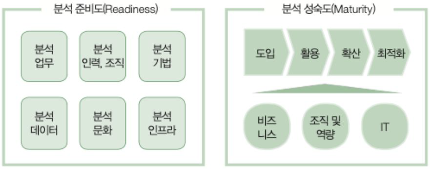
교재 p.17
데이터 분석업무를 지속적으로 고도화하기 위한 조직내 분석 관리체계.
| 구분 | 내용 |
|---|---|
| 대상 | 마스터데이터, 메타데이터, 데이터사전, 빅브라더 |
| 구성 | 원조절, 원칙, 조직, 절차 |
| 체계 | 데이터표준화, 데이터관리체계, 저장소관리, 표준화활동 |
교재 p.22
데이터 과학자, 알고리즈미스트
| 구분 | 내용 |
|---|---|
| 하드스킬 | 빅데이터 이론, 분석기술 |
| 소프트 스킬 | 스토리텔링, 사고, 커뮤니케이션 |
교재 p.24
빅데이터 분석/활용 위해 라이프사이클 과정을 규격화한 IT환경.
| 구분 | 내용 |
|---|---|
| 주요기능 | 실시간 빅데이터처리, 분산병렬처리, 대규모 트랜잭션, 파일관리 효율화 |
| 3계층 | SW계층, 플랫폼계층, 인프라스트럭쳐 계층 |
교재 p.26
대용량 데이터를 분산저장(Map) 및 병렬 집계(Reduce)할 수 있는 오픈소스 기반 분산처리 FW.
| 구분 | 내용 |
|---|---|
| 특 | 분산저장, 병렬처리, 오픈소스, 장애허용, 확장성 |
| v3.0 | HDFS+YARN+최적화, Erasure Coding, Ozone |
| 구성 | YARN, MapReduce, HDFS |
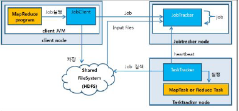
교재 p.29
데이터 분할, 집계 병렬처리하기 위한 분산컴퓨팅 모델.
| 구분 | 내용 |
|---|---|
| 특 | 자동 분산 실행, 대용량 처리, HDFS기반 처리 |
| 구성 | (작업관리) JobTracker, TaskTracker, (입력처리) InputFormat (연산) Mapper, Shuffle&Shot, Reducer (출력) OutputFormat |
교재 p.31
저비용의 대규모 노드 클러스터를 이용하여 대용량 데이터 집합을 처리하는 분산파일시스템.
| 구분 | 내용 |
|---|---|
| 구성 | NameNode, Secondary NameNode, DataNode, CheckPoint |
교재 p.43
| 구분 | 내용 |
|---|---|
| 종류 | (Column기반) ORC, Parquet, DeltaLake, Feather (Row기반) Avro, JSON, CSV, SequenceFile (Hybrid) RCFile |
교재 p.44
Hadoop 기반의 대용량 데이터 저장을 위한 컬럼 기반의 저장 포맷.
| 구분 | 내용 |
|---|---|
| 특 | 스트라이프 구조, 인덱스 내장, Hive 최적화, 고압축 지원 |
| 구성 | 스트라이프, 로우데이터, 인덱스데이터, 스트라이프 푸터, 파일 푸터, 포스트스크립트 |
교재 p.33
★ 빈출
| 구분 | 내용 |
|---|---|
| 종류 | DB to DB, EAI, ETL, 크롤링, OpenAPI, 센싱, 척와, 플럼, 스트리밍, RSS Reader, 스쿱, 카프카 |
교재 p.39
실시간 이벤트 처리를 지원하는 고성능 분산 스트리밍 플랫폼.
| 구분 | 내용 |
|---|---|
| 특 | 수평확장, 내결함성, 도구 연계성 |
| 구성 | (데이터생성) Producer (메시지 저장/전달) Broker, Topic, Partition (데이터 소비) Consumer (관리) Zookeeper |
| 아키텍처 고려사항 | 카프카 구축 시 아키텍처 고려사항 → Topic 설계, Partition 수 설정, Replication Factor 설정, Broker 분산배치 |
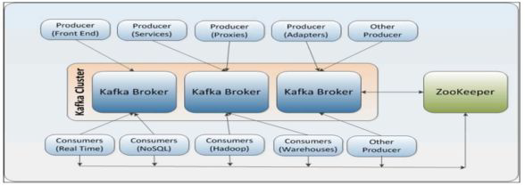
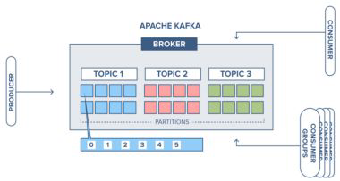
교재 p.48
★ 빈출실시간 및 배치 데이터 처리 결합하여 대용량 데이터를 처리하는 아키텍처 패턴.
| 구분 | 내용 |
|---|---|
| 특 | 고가용성, 내결함성 |
| 레이어 | 스바서. 스피드, 배치, 서빙 레이어 |
| +a | 한계점 → 설계 복잡성, 중복처리, 높은 비용, 병목현상 → 카파 아키텍처 |
교재 p.49
★ 빈출실시간 및 배치 데이터를 단일 스트리밍 경로로 처리하는 빅데이터 아키텍처 패턴.
| 구분 | 내용 |
|---|---|
| 특 | 배치 레이어를 스피드 레이어에 통합. |
| 레이어 | 스서. 스피드 레이어, 서빙 레이어 |
교재 p.50
★ 빈출기존 시스템 유지하면서 변경분(CDC)만을 추가하거나 수정하는 방식의 아키텍처
| 구분 | 내용 |
|---|---|
| 특 | CDC 처리, 데이터레이크 기반 계층적 처리, 배치+스트리밍 통합 |
| 레이어 | 브실골. 브론즈, 실버, 골드 레이어 |
| +a | 델타 아키텍처 기반의 스토리지 F/W → "델타레이크" : ACID트랜잭션, 메타데이터 처리, 데이터 버저닝 지원 → 브실골 레이어, CDC, SCD(이력관리) |
교재 p.51
빠른 연산과 API 지원을 통해 대규모 데이터처리를 위한 오픈소스 인메모리 분산처리 플랫폼
| 구분 | 내용 |
|---|---|
| 특 | 인메모리, RDD기반, Hadoop 한계 극복 및 호환성 |
| 구성 | (Application) Spark SQL, Spark Streaming, Mllib, GraphX (실행엔진) Spark Core, Executor, Worker (인프라) ZooKeeper, YARN, HDFA Driver, RDD |
교재 p.61
파이썬에서 데이터 조작, 분석을 위한 오픈소스 라이브러리
| 구분 | 내용 |
|---|---|
| 구성 | 시리즈, 데이터프레임 |
| 주요기능 | 결측값처리, 데이터필터링, 시계열처리, 크기형태조정, 시각화 도우미 |
교재 p.92
상향식 접근법, 공감 중심으로 문제를 폭넓게 이해. 더블 다이아몬드 기반
| 구분 | 내용 |
|---|---|
| 구성 | 공정아프테. 공감→정의→아이디어→프로토타입→테스트 |
교재 p.95
★ 빈출데이터 분석 생명 주기에 따른 정형화된 절차 및 방법, 도구를 체계적으로 정리한 방법론.
| 구분 | 내용 |
|---|---|
| 종류 | (통계적) 기술통계, 추론통계, 빈도분석, 분산분석, 회귀분석 등 (데이터마이닝) SEMMA, CRISP-DM, KDD (빅데이터) 계층적 프로세스 모델 |
교재 p.96
데이터베이스에서 의미있는 지식을 탐색하는 데이터 마이닝 방법론.
| 구분 | 내용 |
|---|---|
| 절차 | Selection → Preprocessing → Transformation → Data Mining → Evaluation |
교재 p.97
★ 빈출4개 계층적 프로세스 모델을 적용한 6단계 데이터 마이닝 방법론
| 구분 | 내용 |
|---|---|
| 절차 | Business Understanding → Data Uderstanding → Data Preparation → Modeling → Evaluation → Deployment |
교재 p.99
SAS사 주도, 기술통계중심의 데이터마이닝 방법론
| 구분 | 내용 |
|---|---|
| 절차 | Sampling → Explore → Modify → Modeling → Assessment |
교재 p.101
★ 빈출3계층 5단계 수행절차. 비정형데이터 활용
| 구분 | 내용 |
|---|---|
| 절차 | Planning → Preparing → Analyzing → Developing → Deploying |
교재 p.119
★ 빈출데이터의 속성을 구분지어 데이터를 기호 또는 숫자로 표현하는 기준.
| 구분 | 내용 |
|---|---|
| 구성 | 명서등비. (질적) 명목, 서열 (양적) 등간, 비율 |
교재 p.124
★ 빈출비정형 데이터를 컴퓨터가 이해 및 분석할 수 있도록 변환하는 절차.
| 구분 | 내용 |
|---|---|
| 기법 | 평집일정표. 소속범샘차. 평활화(이상값 변환), 집계(요약), 일반화(스케일변환), 정규화(구간 적용), 표준화(0중심 분포), 소수점 스케일링, 속성 생성, 범주화, 샘플링, 차원축소 |
교재 p.127
★★★ 빈출식별 가능한 데이터를 수정하여 개인을 식별할 수 없도록 처리하는 절차.
| 구분 | 내용 |
|---|---|
| 대상 | 식별자, 준식별자, 민감정보 |
| 조치 | (식별방지기법) 가총삭범마. 가명처리, 총계처리, 삭제, 범주화, 마스킹 (프라이버시 모델기반 추론방지) k-익명성, l-다양성, t-근접성 |
| 세부기술 | (가명) 휴리스틱가명화, 암호화, 교환 (총계) 총계, 부분총계, 라운딩, 재배열 (삭제) 식별자삭제, 식별자 부분삭제, 레코드 삭제, 식별요소 전부삭제 (범주화) 감추기, 랜덤라운딩, 범위방법, 제어라운딩 (마스킹) 임의잡음추가, 공백과 대체 |
교재 p.133
개인 식별 가능성을 프라이버시 모델을 사용하여 확률적/정량적으로 제한하는 식별방지 방법론.
| 구분 | 내용 |
|---|---|
| 종류 | k-익명성, l-다양성, t-근접성 연결공격 → "k-익명성" → 동질성, 배경지식 공격 → "l-다양성" → 쏠림, 유사성 공격 → "t-근접성" |
교재 p.133
준식별자 가능 조합 개수가 최소 k개 이상이 되도록 구성하는 기법.
| 구분 | 내용 |
|---|---|
| 특 | 연결공격 방지. |
| 취약점 | 동배. 동질성 공격, 배경지식 공격 → l-다양성으로 해결 |
교재 p.134
민감한 정보의 다양성을 높여 추론가능성을 낮추는 기법.
| 구분 | 내용 |
|---|---|
| 특 | 동질성, 배경지식 공격 방지 |
| 취약점 | 쏠유. 쏠림 공격, 유사성 공격 → t-근접성으로 해결 |
교재 p.135
민감정보의 분포를 낮춰 분포 차이를 t이하로 낮추는 기법.
| 구분 | 내용 |
|---|---|
| 특 | 쏠림 공격, 유사성 공격 방지, 분포 간 거리를 KL-Divergence 나 Variational Distance 로 측정 |
교재 p.137
★ 빈출암호화 상태에서도 연산 및 분석이 가능한 4세대 암호화 기법.
| 구분 | 내용 |
|---|---|
| 특 | 프라이버시 보존, 데이터 이동 최소화, 높은 계산비용 |
| 유형 | 부준완. 부분 준 완전 |
| 기술 | Gen09, DGHV10, CRT-Based |
| 알고리즘 | Pailer(공개키, 덧셈), RSA(곱셈), BGV(정수, 완전동형), CKKS(실수), TFHE(이진연산) |
교재 p.141
★ 빈출합성데이터의 안전한 생성/활용 지원 위한 준수사항 안내서.
| 구분 | 내용 |
|---|---|
| 합성데이터 고려사항 | 재식별가능성, 사회적 부작용, 활용환경통제, 이중검증, 통계적특성 한계 |
| 생성/활용절차 | 사생안심활. 사전준비 → 합성데이터 생성 → 안전성/유용성검증 → 심의위원회 평가 → 활용 및 안전한관리 |
| 생성기법 | 베이지안, 깁스샘플링, CARY, Fuzzy, SVM, RF, GAN, VAE, 디퓨전 모델, 지수메커니즘, 차등Privacy |
| 안전성지표 | 정형(구별위험도, 연결위험도, 추론위험도) 비정형(생성과정, 이미지유사성) |
| 유용성지표 | 정형(일차원분포 유사성, 2차원관계 유사성, 구별불가능성) 정형/비정형(모형 성능 유사성) 비정형(Visual Turing Test, 이미지 품질검증) |
| 평가기법 | 재식별 위험성 평가(DUPI - k-NN기반), CAP점수(속성공개위험), CM(상관구조)) 유사도(상관관계, 통계적, 분류모델, 회귀모델), pMSE |
| 잔여 위험 | 새로운 식별위험, 멤버십 추론, 악의적이용, 기술변화, 생성모델/매개변수 유출 |
| 대응방안 | 사전위험평가, 영향분석, 기술운영통제, 지속모니터링, 모델 보안강화 |
교재 p.145
★★★ 빈출개인정보를 수집, 분석, 처리하는 과정에서 프라이버시를 보호하기 위한 기술.
| 구분 | 내용 |
|---|---|
| 난독 | 차분Privacy, 합성데이터, 영지식증명 |
| 암호화 | 동형암호, 신원기반, SMPC, TEE |
| 분산분석 | 연합학습, 분산분석 |
| 데이터책임 | 책임시스템, 개인정보 관리시스템 |
교재 p.151
조직 내 관리하는 데이터의 내용, 관리체계 수준을 평가하고 인증을 부여하는 제도
| 구분 | 내용 |
|---|---|
| 법적근거 | 데이터산업법 20조. |
| 내용 | 심사기준(정형/비정형 - 완유일정접유). 품질기준(정일유접적보+적보다유) 유형(Simple/Normal/Complex Type) 등급(Class A,B,C) 유효기간(1년) |
| 관리체계 | 심사기준( 실행(PDCA) 지원(정보/기술) 지원제공(교육)) ) 등급(도관체예혁) 유효기간(3년) |
교재 p.156
★ 빈출사용자 의사결정을 지원하기 위해 정형 데이터를 공통의 형식으로 변환해 관리하는 DB.
| 구분 | 내용 |
|---|---|
| 특징 | 주통시비. 주제중심, 통합성, 시간가변성, 비휘발성 |
| 구성 | (데이터처리) ETL, ODS (저장 및 구조화) Repository, DataMart (관리정보) 메타데이터 (UI) Access Tool, BI |
| 아키텍처 | 스타스키마, 스노우플레이크 스키마 |
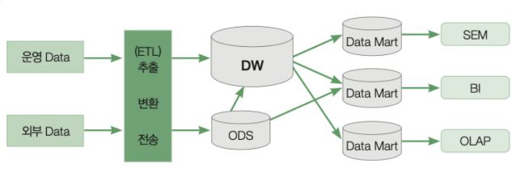
교재 p.157
Fact Table 을 중심으로 다수의 Dimension Table 을 직접 연결한 스키마 구조.
| 구분 | 내용 |
|---|---|
| 특 | 비정규화된 차원 테이블, 적은 조인, 빠른 성능, 많은 저장공간 요구 |
교재 p.157
스타 스키마의 Dimension Table 을 정규화하여 분리한 계층적 스키마 구조.
| 구분 | 내용 |
|---|---|
| 특 | 정규화된 차원 테이블, 다단계 조인 필요, 느린 성능, 저장공간 최적화, 정합성 |
교재 p.158
다양한 출처로부터 데이터를 수집, 변환, 저장하는 데이터 처리 과정.
| 구분 | 내용 |
|---|---|
| 특 | 데이터 통합, 자동화, 대용량 처리, 품질향상, 분석 친화적 구조 |
| 수행단계 | Interface → Staging → Profiling → Cleansing → Integration → De-normalizing |
교재 p.159
운영데이터 통합하여 근실시간 조회/저장 가능한 데이터 저장소.
| 구분 | 내용 |
|---|---|
| 특 | 데이터 통합, 표준화, 주제중심 구조 |
| 레이어 | Interface, Data Staging, Data Profiling, Cleansing, Integration, Export Layer |
교재 p.160
★ 빈출대용량 데이터를 다양한 각도에서 빠르게 조회/분석할 수 있도록 지원하는 시스템.
| 구분 | 내용 |
|---|---|
| 특 | 다차원 분석, 빠른 응답, 복잡 질의 처리, 사용자 친화적 |
| 기능 | Drill Down, Roll Up, Drill Access, Drill Through, Pivot, Slice, Dice |
| 유형 | MOLAP, ROLAP, HOLAP, DOLAP |
| +a | OLAP 와 OLTP 의 기능 결합 → HTAP Database : 실시간 트랜잭션 처리와 분석을 동시 수행 → 동시성제어, 통합스토리 엔진, 인메모리 기반, 하이브리드 쿼리 |
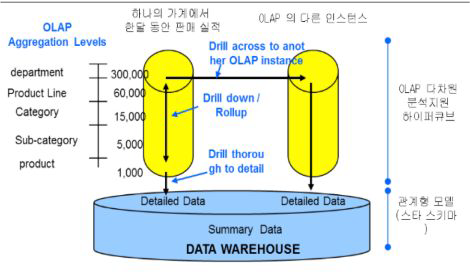
교재 p.162
★ 빈출대규모 정형/비정형 원형 데이터를 저장하는 데이터 레파지토리.
| 구분 | 내용 |
|---|---|
| 특 | 형식제한 없음, 스키마 온 리드, 확장성, 분석 최적화, 비용 효율성 |
| 절차 | 수조분제. 데이터 수집 → 데이터 조직화 → 데이터 분석 → 데이터 제공 |
| 특징 | ELT+실시간처리. 메타데이터 기반. Raw+구조화 계층 |
교재 p.165
교재 p.167
★ 빈출데이터 사일로를 제거하고, 분산 데이터 환경에서 데이터 통합 관리를 지향하는 아키텍처.
| 구분 | 내용 |
|---|---|
| 특 | 데이터 가시성, 데이터 관리 자동화, 실시간 데이터 접근 |
| 아키텍처 | DS Connector, 메타데이터 관리, 데이터통합, 오케스트레이션, 보안, AI/ML, 분산구조 |
교재 p.169
★ 빈출도메인 중심의 탈중항형 데이터 관리방식을 적용한 데이터 아키텍처 패러다임.
| 구분 | 내용 |
|---|---|
| 특 | 도메인 중심 소유, 자율과 책임, 데이터 제품화 |
| 4원칙 | 도메인 소유권, 데이터 제품화, 셀프서비스 플랫폼, 연합형 계산 거버넌스 |
| 구성 | (도메인) 도메인팀, 데이터계약, 데이터제품 (플랫폼) 셀프서비스 데이터플랫폼, 데이터플랫폼 팀, 인터페이스 (거버넌스) 연합형 거버넌스 (지원조직) Enabling Team |
교재 p.175
비정형 또는 반정형 데이터 저장과 확장성에 최적화된 데이터베이스 시스템.
| 구분 | 내용 |
|---|---|
| 특 | Schemaless, Schema on Read, 수평확장, 고속처리, 대용량 적합, 가용성 중심 |
| 일관성 모델 | BASE. Basically Available, Soft-State, Eventually Consistency |
| 이론 | CAP 이론, PACELC 이론 |
| 종류 | Key-Value(Redis, Riak) Document Store(MongoDB, CouchDB) Column Family(Cassandra, Hbase) Graph DB(Neo4j, ArangoDB) |
| 모델링패턴 | 반집클 원인복. 반정규화, 집계기반구조, 클라이언트측 조인, 원자성 집계, 인덱스 테이블, 복합키 테이블 |
| 모델링절차 | 모결패기후최. 도메인 모델파악→결과기반 디자인→패턴이용모델링→기능최적화→후보모델선정→선정모델 최적화 (전체사이클)비정규화,중복설계,샤딩,파티셔닝 고려 |
교재 p.176
대용량 분산시스템에서 일관성, 가용성, 단절내성 중 두가지를 전략적으로 선택해야 한다는 이론.
| 구분 | 내용 |
|---|---|
| 구성 | Consistency, Availability, Partition Tolerance |
| 조합 | CA (RDBMS) CP(MongoDB, Hbase, Redis, Neo4j) AP(Cassandra, Couchbase, DynamoDB, Riak) |
교재 p.179
Key-Value 자료 구조를 갖는 인메모리 NoSQL.
| 구분 | 내용 |
|---|---|
| 자료구조 | String, List, Set, Hash, Sorted Set, Bitmap, HyperLog, Geo, Stream |
교재 p.181
Hadoop HDFS 기반의 분산형 Column Family NoSQL DB.
| 구분 | 내용 |
|---|---|
| 특 | 정렬된 컬럼기반 저장, HDFS 연동, 유연한 스키마, 선형 확장성 |
| 자료구조 | RowKey, Column Family, Column Qualifier, Timestamp, Cell |
| 구성 | Hbase Client, Zookeeper, Hmaster, RegionServer, MemStore, WAL, Region, Hfile, HDFS |
교재 p.182
데이터가 자동으로 여러 노드에 분산 저장되는 대규모 분산형 Column Family NoSQL DB.
| 구분 | 내용 |
|---|---|
| 특 | P2P 분산구조, 선형 확장, 무중단 고가용성, Ring 구조 분산저장 |
| 구성 | 클라이언트(Client Driver) 분산노드(Node, Cluster, Gossip Protocol, Snitch) 분산계층(Partitioner, Keyspace) 저장(Commit Log, Memtable, SSTable) |
| 자료구조 | Keyspace, Table, Partition Key, Clustering Key, Row, Column, Cell |
교재 p.184
BSON 구조의 자료를 유연하게 저장하는 Document Store NoSQL DB.
| 구분 | 내용 |
|---|---|
| 특 | 오토샤딩, 자동 장애조치, 읽기 분산, BSON, Schema-less |
| 구성 | 클라이언트(Application, Driver) 요청처리(mongos) 저장(mongod, datastore, oplog) 확장(ReplicaSet, mongod, Shard) |
| 자료구조 | Collection, Document, Field, Index, Embedded Document, Reference, Shard |
교재 p.186
★ 빈출분산된 데이터베이스 노드에 저장된 데이터를 조합하여 하나의 결과를 도출하는 조인 연산.
| 구분 | 내용 |
|---|---|
| 특 | 데이터 위치 고려, 통신비용, 병렬처리 가능성, 로컬 조인 우선 |
| 종류 | 로 맵브리세. 로컬조인, 맵조인, 브로드캐스트조인(브로드캐스트, 리플리케이트), 리파티셔닝조인(셔플, 해시, 소트머지), 세미조인 |
교재 p.192
★ 빈출데이터를 분석 및 처리에 적합한 형태로 가공하는 절차.
| 구분 | 내용 |
|---|---|
| 특 | 데이터 변화 시 반복수행 |
| 절차(NCS) | 실정통 축파불변. (정제) 데이터 실수화 → 정제 → 통합 (분석변수처리) 데이터 축소 → 파생변수생성 → 불균형 데이터처리 → 변수 변환 |
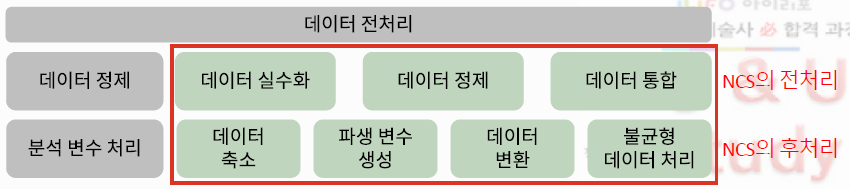
교재 p.193
데이터 분석 시 오류를 일으킬 수 있는 요인을 제거하여 신뢰도를 높이는 과정.
| 구분 | 내용 |
|---|---|
| 데이터 오류 원인 | 결측값, 노이즈, 이상값, 아티팩트 |
교재 p.194
★ 빈출값이 존재하지 않고 비어있는 상태. Na, NaN, Inf, Null
| 구분 | 내용 |
|---|---|
| 유형 | 완전무작위(노상관), 무작위(결과영향X), 비무작위(결과영향) |
| 처리기법 | (삭제) 단일값 삭제, 목록 삭제 ((대치)) (단순대치) 완전분석법, 단순확률대치(핫덱,콜드덱,근접이웃), 평균대치(비조건부,조건부) (다중대치) |
교재 p.202
★ 빈출관측된 데이터 범위에서 많이 벗어난 값
| 구분 | 내용 |
|---|---|
| 탐색기법 | (통계적) Z검정, 카이제곱검정, (IQR) 사분위수 (회귀진단) 레버리지, 표준화잔차, 쿡의거리 (거리) K-NN, 마할라노비스 (밀도) LOF, DBSCAN, iForest, k-Means (처리기법) (삭제) 단일값 삭제, 목록 삭제 (극단치) 극단치 기준 제거, 절단, 조정 ((대치)) (단순대치) 완전분석법, 단순확률대치(핫덱,콜드덱,근접이웃), 평균대치(비조건부,조건부) (다중대치) |
교재 p.211
확보한 데이터를 사용하여 정보를 추가하여, 기존 데이터를 보다 유용하게 가공하는 방법.
| 구분 | 내용 |
|---|---|
| 유형 | 변수선택, 차원축소, 파생변수생성, 불균형 데이터처리, 데이터 변환 |
교재 p.214
★ 빈출해결하고자 하는 문제에 대해 유의미한 변수를 선택하는 과정.
| 구분 | 내용 |
|---|---|
| 기법 | 필래임. 필터 기법, 래퍼 기법, 임베디드 기법 (필터기법) 데이터 통계적 특성 이용해 관련성이 높은 변수를 선택 (알고리즘) 카이제곱검정, 정보이득, 피셔스코어, 상관계수, 분산기준 (래퍼기법) 변수 일부 사용해 모델링해 관련성을 측정해 변수를 선택. (탐색최적화) RFE(안중요 제거), GA(유전) (순차선택 전략) 전진선택법, 후진제거법, 단계별선택법 (임베디드기법) 필터 래퍼 기법 결합하여, 내부에 규제를 가해 기여도가 큰 변수를 탐색하는 기법. (기법) 라쏘회귀, 릿지회귀, 엘라스틱넷, SelectFromModel(의사결정나무트리) |
교재 p.214
데이터 통계적 특성 이용해 관련성이 높은 변수를 선택
| 구분 | 내용 |
|---|---|
| 알고리즘 | 카이제곱검정, 정보이득, 피셔스코어, 상관계수, 분산기준 |
교재 p.215
변수 일부 사용해 모델링해 관련성을 측정해 변수를 선택.
| 구분 | 내용 |
|---|---|
| 탐색최적화 | RFE(안중요 제거), GA(유전) |
| 순차선택 전략 | 전진선택법, 후진제거법, 단계별선택법 |
교재 p.216
필터 래퍼 기법 결합하여, 내부에 규제를 가해 기여도가 큰 변수를 탐색하는 기법.
| 구분 | 내용 |
|---|---|
| 기법 | 라쏘회귀, 릿지회귀, 엘라스틱넷, SelectFromModel(의사결정나무트리) |
교재 p.218
★ 빈출데이터의 비즈니스적 의미와 특성을 보존하며 변수를 줄이는 기법.
| 구분 | 내용 |
|---|---|
| 특 | 연산 비용 감소. 시각화, 노이즈제거, 성능향상, 차원의저주 해결, 다중공선성 제거 |
| 차원축소 알고리즘 | (선형) PCA, LDA, FA (비선형) t-SNE, UMAP, Isomap, LLE (신경망기반) AE, VAE, RBM (행렬분해) SVD, NMF, MDS |
교재 p.220
기존 변수에 함수 등을 활용하여 새로운 변수를 만들거나 조합하는 기법.
| 구분 | 내용 |
|---|---|
| 기법 | 특징 추출, 열 결합, 타 테이블 참조, 데이터 피봇, 레코드 요약, 표준화/서열화, 수치 변환, 단위 변환 |
교재 p.222
★ 빈출분석을 위해 불필요한 변수를 제거하고 가공하는 과정.
| 구분 | 내용 |
|---|---|
| 기법 | (정규변환) 로그변환, 제곱근변환, 제곱변환, 박스콕스변환, 범주화, 스케일링 (범주형 데이터 변환) 명목척도 변환, 더미변수, 변수 구간화 (스케일링) 표준화, 정규화 |
교재 p.228
★ 빈출분석 데이터의 각 클래스에 속하는 데이터의 수가 동일하지 않은 상태.
| 구분 | 내용 |
|---|---|
| 영향 | 판별성능 저하, Accuracy Paradox |
| 처리기법 | (오버샘플링) 랜덤, 스모트, 보더라인스모트, 아다신 (언더샘플링) 랜덤, 토멕링크, CNN, OSS (알고리즘 기반) 소수 클래스 가중치 부여, 비용 민감 학습 |
| +a | 불균형 데이터 처리 시 고려사항 → 과적합 위험, 정보 손실, 다양성 유지, 모델 평가지표의 적절성 |
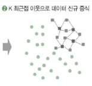
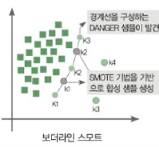
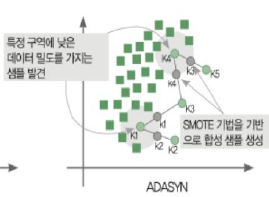
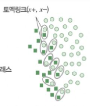
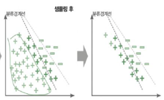
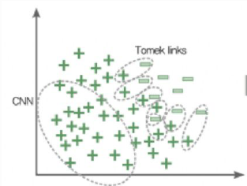
교재 p.238
★ 빈출데이터를 이용하여 현상에서 패턴을 찾고 통찰 얻는행위.
| 구분 | 내용 |
|---|---|
| 과정 | 묘탐확예. 묘사적(DDA) → 탐색적(EDA) → 확증적(CDA) → 예측적(PDA) (묘사적) 현재 모습 요약 - 평균, 표준편차, 빈도수, 백분위수, 첨도, 왜도 (탐색적) 수집된 데이터 탐색, 가설 도출 - 그래프분석, 정규성 검정 → (4주제) 저잔재현. 저항성, 잔차의해석, 재표현, 현시성 (확증적) 도출된 가설 검정 - 점추정, 구간추정, 가설검정 (예측적) 관계식을 만들고 최적 조건 예측 - 모델링 기법, 시뮬레이션 기법 |
교재 p.239
★ 빈출데이터의 특성을 시각화 및 통계적으로 파악하여 데이터를 이해하는 초기분석과정.
| 구분 | 내용 |
|---|---|
| 특 | 데이터 이해 중심, 시각화 기반, 이상치 탐지, 모델 가설 검정, 분석방향 결정 |
| 4주제 | 저잔재현. (저항성) 데이터 일부 파손 시, 영향 적게받는 성질 (잔차의해석) 예측값의 잔차 계산, 보통 데이터와 다른 경향 확인 (데이터의 재표현) 데이터 변환 통해 데이터 구조 파악 (데이터의 현시성) 그래프, 도표 등 시각화 변환 |
교재 p.241
★ 빈출두 변수 간의 선형적인 관계 및 강도를 통계적으로 분석하는 기법.
| 구분 | 내용 |
|---|---|
| 가정사항 | 이변량, 정규분포, 선형성 검증 |
| 해석 | 선형성, 방향, 크기(강도) |
교재 p.243
두 변수가 어떤 패턴을 보여주는가를 나타내는 지표.
| 구분 | 내용 |
|---|---|
| 특 | 값의 범위 무한대, 강도 알수 없음. |
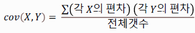
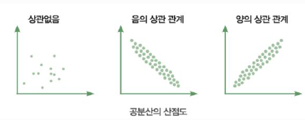
교재 p.244
공분산을 표준화하여 두 변수 사이의 관계와 방향, 강도를 측정하는 지표.
| 구분 | 내용 |
|---|---|
| 가정사항 | 이변량, 정규분포, 선형성검증 |
| 종류 | 피어슨 상관계수, 스피어만 순위 상관계수, 켄달의 순위 상관계수 |
| 고려사항 | -1부터 1 사이의 값, 유의성 검정 필요. |
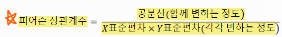
교재 p.246
기술통계 기법으로 정의하는 수치 데이터
| 구분 | 내용 |
|---|---|
| 종류 | (중심경향치) 평균, 중앙값, 최빈값 (산포도) 표준편차, 분산, 범위, 사분위수, 변동계수 (비대칭도) 왜도, 첨도 |
교재 p.247
자료 데이터 분포의 중심을 보여주는, 자료 전체를 대표할 수 있는 값
| 구분 | 내용 |
|---|---|
| 종류 | (중심경향치) 평균, 중앙값, 최빈값 |
| 평균의 유형 | 산술, 절사, 가중, 기하, 조화 |
교재 p.250
데이터가 흩어져 있는 정보를 설명하는 통계치
| 구분 | 내용 |
|---|---|
| 종류 | (산포도) 표준편차, 분산, 범위, 사분위수, 변동계수 |
교재 p.256
자료 분포의 형태를 설명해 주는 통계량.
| 구분 | 내용 |
|---|---|
| 종류 | (왜도) Skewness (첨도) Kurtosis |
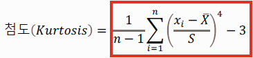
교재 p.261
★ 빈출두 개 이상의 변수 간 인과관계 및 유사성을 확인하는 분석기법.
| 구분 | 내용 |
|---|---|
| 분석기법 | (관계 분석) 다중회귀, 로지스틱회귀, 다변량 분산분석, 상관관계분석, 교차분석 (차원 축소) PCA, FA, 정준상관분석 (개체 분류) MDS, 판별분석 |
교재 p.263
데이터의 비즈니스적 의미와 특성을 보존하며 변수를 줄이는 기법.
| 구분 | 내용 |
|---|---|
| 특 | 연산 비용 감소. 시각화, 노이즈제거, 성능향상, 차원의저주 해결, 다중공선성 제거 |
| 차원축소 알고리즘 | (선형) PCA, LDA, FA (비선형) t-SNE, UMAP, Isomap, LLE (신경망기반) AE, VAE, RBM (행렬분해) SVD, NMF, MDS |
교재 p.265
★ 빈출비정형 데이터로부터 통계적 규칙이나 패턴을 탐색하고 의미있는 정보로 변환하는 분석과정
| 구분 | 내용 |
|---|---|
| 비정형 데이터 유형 | 텍스트, 이미지, 음성, 영상, 로그 파일 |
| 기법 | 텍스트, 웹, 오피니언, 소셜네트워크 분석, 감성분석, 리얼리티마이닝, 프로세스 마이닝 |
| 절차 | 목적설정 → 데이터준비 → 데이터가공 → 마이닝적용 → 검증 및 확인 |
교재 p.267
웹 데이터로부터 숨겨진 의미나 패턴을 찾아 비즈니스적 인사이트를 도출하는 과정.
| 구분 | 내용 |
|---|---|
| 기법 | 컨구사. 웹컨텐츠, 웹구조, 웹사용 마이닝 |
교재 p.268
비정형 텍스트 데이터를 자연어 처리방식을 통해 숨겨진 의미를 분석하는 기법.
| 구분 | 내용 |
|---|---|
| 절차 | 수전분시. 텍스트 수집 → 전처리 → 분석 → 시각화 |
| 기법 | (수집) 크롤링, 말뭉치, API, 로그수집 (전처리) 말뭉치형성, 토큰화, 불용어처리, 정규화, 표제어추출, 텍스트인코딩 (분석) 통계,마이닝,머신러닝,NLP (시각화) 워드클라우드, SNA |
교재 p.270
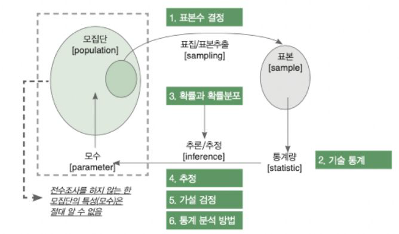
교재 p.274
★ 빈출
교재 p.271
표본 또는 전체 데이터에 대한 통계량을 계산하는 과정.
| 구분 | 내용 |
|---|---|
| 기법 | 평균, 중앙값, 범위, 분산, 그래프, 히스토그램 |
교재 p.275
교재 p.275
데이터의 속성을 구분지어 데이터를 기호 또는 숫자로 표현하는 기준.
| 구분 | 내용 |
|---|---|
| 구성 | 명서등비. (질적) 명목, 서열 (양적) 등간, 비율 |
교재 p.276
분석 대상이 되는 변수의 개수가 1개인 자료
| 구분 | 내용 |
|---|---|
| 요약기법 | (범주형) 도수분포표 (연속형) 중심경향치, 산포도, 비대칭도 |
| 그래프 | (범주형) 바차트, 파이차트 (연속형) 히스토그램, 커널밀도곡선, 박스그래프, 바이올린그래프 |
교재 p.277
분석 대상이 되는 변수의 개수가 2개 이상인 자료
| 구분 | 내용 |
|---|---|
| 요약기법 | (범주-범주) 도수분포표, 분할표 (범주-연속) 그룹별 평균 (연속-범주) 도수분포표 (연속-연속) 산술평균, 중앙값, 조화평균 |
| 분석기법 | (범주-범주) 카이제곱검정, 백분율분석 (범주-연속) t-검정, 분산분석 (연속-범주) 로지스틱 회귀분석 (연속-연속) 상관관계 분석, 선형/다중회귀분석 |
| 그래프 | (범주-범주) 막대, 파이, 모자이크 (범주-연속) 그룹별 막대, 상자그림 (연속-범주) 히스토그램 (연속-연속) 점, 산점도, 시계열 그래프 |
교재 p.278
★ 빈출모집단으로부터 추출된 표본을 조사하여 전체 집단의 특성을 추정하는 통계조사 방법.
| 구분 | 내용 |
|---|---|
| 표본 추출법 | (확률) 단계층집다. 단순확률, 계통, 층화확률, 집락, 다단계 (비확률) 편할지눈. 편의, 할당, 지원자, 눈덩이 |
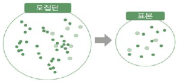
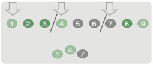
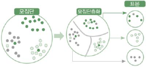
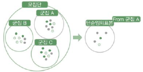
교재 p.293
★ 빈출
| 구분 | 내용 |
|---|---|
| 이산 | 확률질량함수. 확률합1, 점 표현 |
| 연속 | 확률밀도함수, 면적1, 곡선그래프 |
교재 p.298
★ 빈출이산형 확률변수에 대한 확률질량함수(PMF) 결과가 이루는 분포.
| 구분 | 내용 |
|---|---|
| 특 | 확률의 합=1, 이산형 변수, 확률을 점으로 표현 |
| 유형 | 이베이초포음기. 이산균등(동일), 베르누이(결과 1 or 0), 이항(베르누이 n회 성공수), 초기하(비복원추출), 포아송(단위시공간), 음이항(베르누이 k성공까지), 기하(베르누이 첫성공) |
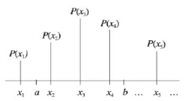
교재 p.299
모든 가능한 이산 값들이 동일한 확률을 가지는 확률분포.
| 구분 | 내용 |
|---|---|
| 예 | 주사위, 복권번호 추첨 |
교재 p.301
한 번의 시행에서 성공(1) 실패(0) 두 가지 결과만을 갖는 이산확률분포.
| 구분 | 내용 |
|---|---|
| 확률 | p, 1-p |
| 예 | 동전, 불량/정상, 이메일 스팸여부 |
| 관계 | 반복시행해 이항분포로 확장 |
교재 p.303
베르누이 시행을 n회 반복했을 때, 성공한 횟수 X에 대한 확률분포.
| 구분 | 내용 |
|---|---|
| 예 | 10번 동전 앞면수 |
| 관계 | 극단적 형태 포아송분포 |
교재 p.305
비복원추출로 n회 시행 시, 특정 속성의 항목이 X개 추출될 확률 분포.
| 구분 | 내용 |
|---|---|
| 특 | 확률 매 시행마다 다름 |
| 예 | 5개 뽑아 불량 2개 확률 |
교재 p.307
베르누이 시행을 독립적으로 반복할 때, 첫 성공까지 시행횟수에 대한 확률분포
| 구분 | 내용 |
|---|---|
| 예 | 동전 앞면 나올때까지 |
교재 p.309
베르누이 시행을 독립적으로 반복할 때, k회 성공까지 시행횟수에 대한 확률분포
| 구분 | 내용 |
|---|---|
| 예 | 동전 앞면 3회 나올때까지 |
교재 p.311
단위시간 또는 공간 내에서 발생하는 사건의 수를 모델링하는 이산확률분포
| 구분 | 내용 |
|---|---|
| 가정 | 독립성, 비례성, 비집락성 |
| 예 | 1분간 콜센터 수신전화 수 |
교재 p.313
★ 빈출연속적인 실수형 확률변수에 대한 확률밀도함수(PDF)의 결과가 이루는 분포.
| 구분 | 내용 |
|---|---|
| 특 | 면적=1, 특정 값의 확률은 0, 구간 단위 확률계산 |
| 유형 | 균정티감지카프. 연속균등(동일), 정규분포(종,대칭), t분포(소표본 평균), 감마(지수분포 일반화), 지수(시간간격), 카이제곱(분산검정), F분포(분산비) |
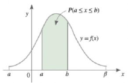
교재 p.314
구간내 모든 값 동일 확률
| 구분 | 내용 |
|---|---|
| 예 | 무작위 실수 생성기 |
교재 p.315
평균 중심 대칭, 종 모양
| 구분 | 내용 |
|---|---|
| 특 | 대칭, 종모양, 넓이 1, 표준편차 작아지면 밀집, 왜도0, 첨도3, 중심극한정리 |
교재 p.318
평균 0, 표준편차가 1인 정규분포
| 구분 | 내용 |
|---|---|
| 특 | 정규분포의 표준화, Z값 기반, 좌우대칭, Z분포표 사용 |
교재 p.322
양의 실수 구간에서 어떤 사건이 k회 발생까지 걸리는 시간 분포
| 구분 | 내용 |
|---|---|
| 특 | 포아송 가정 만족, 양수의 연속값 확률변수. |
| 예 | 콜센터 전화 3회 수신까지 소요시간 |
교재 p.323
단위 시간, 공간 내에서 어떤 사건이 발생할 때까지 걸리는 시간을 나타내는 연속확률분포
| 구분 | 내용 |
|---|---|
| 예 | 첫 고장까지 걸린 시간 |
교재 p.324
표준정규분포를 따르는 독립변수의 제곱합으로 구성된 분포로, 집단의 분산을 추론하는 분포
| 구분 | 내용 |
|---|---|
| 특 | 비대칭 오른쪽 꼬리 분포. 자유도 커지면 정규분포 근사 |
| 활용 | 범주형 변수 검정(적합도 검정, 독립성 검정, 동질성 검정), 분산검정, F분포 구성요소로 사용 |
교재 p.335
모집단의 분산을 모르고, 소표본(n<30)일 때 표본평균 분포 추정
| 구분 | 내용 |
|---|---|
| 특징 | 정규분포 기반, 대칭, fat tail |
| 수식 | t = (X̄ - μ) / (s / √n) |
교재 p.341
서로 독립적인 카이제곱 분포를 자유도 나눈 비율의 분포.
| 구분 | 내용 |
|---|---|
| 특 | 표본분산 분포 추정. |
| 표본분산 분포 | ((n-1) × s²) / σ² |
| 수식 | F = (s₁²) / (s₂²) |
교재 p.330
표본으로부터 계산된 통계량(평균, 분산 비율 … ) 의 확률분포. 오차의 정도 측정
교재 p.333
★ 빈출표본을 반복 추출하여 얻은 표본평균의 분포는 표본의 크기가 충분히 크면 정규분포에 수렴한다는 이론
| 구분 | 내용 |
|---|---|
| 특 | 통계학의 핵심 가정. |
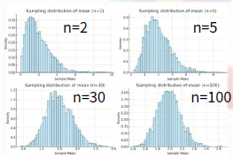
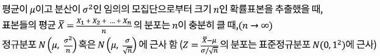
교재 p.335
모집단의 분산을 모르고, 소표본(n<30)일 때 표본평균 분포 추정
| 구분 | 내용 |
|---|---|
| 특징 | 정규분포 기반, 대칭, fat tail |
| 수식 |
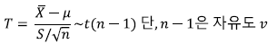
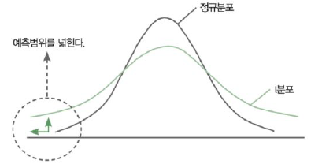
교재 p.341
서로 독립적인 카이제곱 분포를 자유도 나눈 비율의 분포.
| 구분 | 내용 |
|---|---|
| 특 | 표본분산 분포 추정. |
| 수식 | |
| 활용 | 분산비 검정, 분산분석, 회귀분석 |
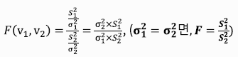
교재 p.345
교재 p.346
추출된 표본을 분석하여 전체 모집단에 대한 특성을 예측/추론하는 기법.
| 구분 | 내용 |
|---|---|
| 기법 | 가설검정, 점추정, 구간추정, 회귀분석, 분산분석 |
교재 p.348
★ 빈출표본 자료를 이용하여 모수의 참값이라고 추정되는 하나의 값을 결정하는 통계적 추정 방법.
| 구분 | 내용 |
|---|---|
| 구성 | 모수, 추정량, 추정치 |
| 점추정 4준거 | 불유일충. 불편성(가까워지는 성질), 유효성(분산 작음 정확), 일치성(모수 같아지는), 충분성(동일 표본 많은정보) |
| 추정방법 | 평균제곱오차(MSE) - 두 점추정치 비교, MSE 작은 추정치 선택 적률법 - 모집단 평균과 표본평균 일치하는 모두 탐색 최대가능도 추정 - 우도함수 최대로 하는 최대우도추정량(미분) |
| 한계점 | 단일값 추정 → 불확실성 정도를 표현하지 못함 → 구간추정 주로 활용 |
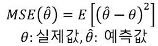
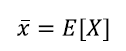
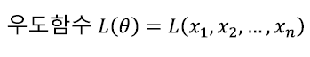
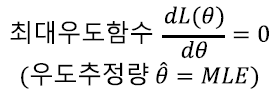
교재 p.350
표본통계 기대치가 모수에 가까워지는 성질.
| 구분 | 내용 |
|---|---|
| 활용 | 비편향 표본통계량. 좋은 추정량 선택 위한 기준. 반복추출 시 정답에 가까워짐 |
교재 p.351
분산 작은 추정량이 모수 정확히 추정 가능성 높음
| 구분 | 내용 |
|---|---|
| 예 | 1000번 추출 → 실제 모수에 근접 = 불편성 있음 |
교재 p.352
표본 무한대 가까워질때 추정량이 모수와 같아지는 성질
| 구분 | 내용 |
|---|---|
| 효율성 | 추정량1 분산 / 추정량2 분산 결과, 1보다 크면 효율적, 1보다 작으면 덜효율적 |
교재 p.353
동일 표본에서 얻은 추정량이 모수에 대한 더 많은 정보 제공
교재 p.355
★ 빈출모수가 그 구간에 얼마의 확률로 들어 있는지를 추정하는 기법.
| 구분 | 내용 |
|---|---|
| 특 | 범위 기반 추정, 신뢰수준 제시, 표준오차 반영 |
| 구성 | 신뢰계수, 신뢰수준, 신뢰구간, 유의수준, 임계값, 표준오차 |
| 모평균의 신뢰구간 추정 - σ² 앎 or σ²모름+대표본 | → z 분포 평균, 표본수, 표준편차 확보 → 신뢰구간에 대응하는 Z값 확인 → 신뢰구간 수식 대입 |
| 모평균의 신뢰구간 추정 - σ²모름+소표본 | → t 분포 평균, 표본수, 표준편차 확보 → (표본수-1) 에 대응하는 t값 확인 → 신뢰구간 수식 대입 |
| 모분산의 신뢰구간 추정 | 표본수, 표본분산 확보 → (표본수-1) 에 대응하는 카이제곱분포 값 확인 → 신뢰구간 수식 대입 |
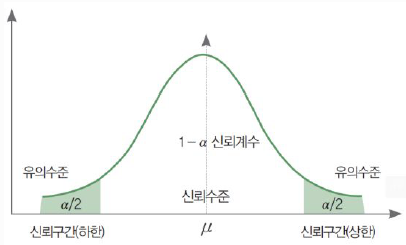
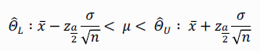
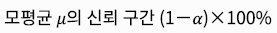
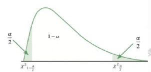
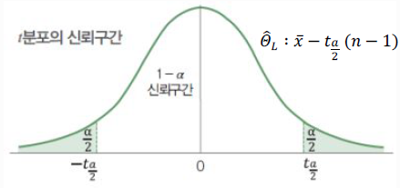
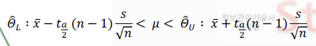
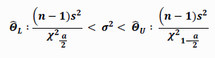
교재 p.358
모분산 알거나 대표본일 모평균 신뢰구간 추정
| 구분 | 내용 |
|---|---|
| 수식 | Z = (X̄ - μ) / (σ / √n) |
교재 p.360
모집단의 분산을 모르고, 소표본(n<30)일 때 표본평균 분포 추정
| 구분 | 내용 |
|---|---|
| 특징 | 정규분포 기반, 대칭, fat tail |
| 수식 | t = (X̄ - μ) / (s / √n) |
교재 p.367
★ 빈출표본이 가진 정보를 이용해 모집단에 대한 주장(가설)이 옳은지 판정하는 과정.
| 구분 | 내용 |
|---|---|
| 가설의 종류 | 귀무가설Ho, 대립가설H₁ |
| 오류 | (1종오류) 귀무 옳은데 귀무 기각 (2종오류) 귀무 그른데 귀무 채택 |
| 가설검정 절차 | 가유검유결. 가설설정 → 유의수준결정 → 검정통계량 계산 → 유의수준 따른 기각역설정 → 통계적 결론 |
| 유형 | ((모수차이 검정)) (평균차이) z검정, t검정, 분산분석 (분산차이) 카이제곱검정, F검정 (비율차이) z검정 ((관계 검정)) (범주형 변수간) 카이제곱검정 (수치형 변수간) 상관계수, z검정, t검정 (종속/인과관계) 회귀계수-t검정, 회귀식-F검정 |
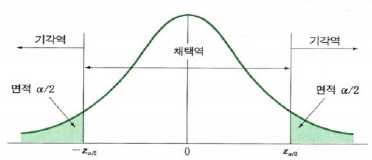
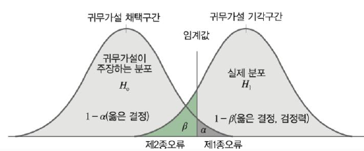
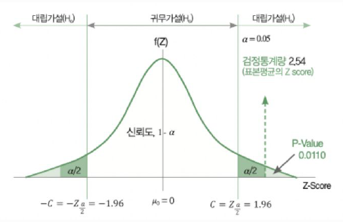
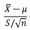
교재 p.12
| 구분 | 내용 |
|---|---|
| 편향 | 지나치게 단순한 모델로 인한 오류. |
| 분산 | 지나치게 복잡한 모델로 인한 오류 |
| 영향 | 편소분대. 편향이 크면 과소적합, 분산이 크면 과대 적합 |
교재 p.13
요건정의(분석요건도출, 수행방안설계, 요건확정) → 모델링(모델링마트, 유의변수도출, 모델링, 성능평가) → 검증(운영테스트, 비즈니스 영향평가) → 적용(운영 적용, 리모델링)
교재 p.16
학습데이터(모델 훈련), 검증데이터(모델 선택), 테스트 데이터(모델 평가)로 분할하여 사용
교재 p.21
★★★ 빈출하나 이상의 독립변수(X)를 사용하여 종속변수(Y)를 설명하거나 예측하기 위한 통계적 기법.
| 구분 | 내용 |
|---|---|
| 가정사항 | 선등정독+다. 선형성(선형관계), 등분산성(분산 일정), 정규성(정규분포), 독립성(오차 독립), 다중공선성 |
| 유형 | 단순회귀분석(1독립) 다중회귀분석(n독립) 일반회귀분석(등간/비율) 더미변수(명목/서열) 선형회귀분석(선형관계) 비선형회귀분석(비선형관계) |
| 회귀모델 평가 지표 | AE(평균오차), MAE(평균절대오차), MAPE(평균 절대백분율오차), MPE(평균백분율오차), MSE(평균제곱오차), RMSE(평균제곱근오차), R²(설명계수) R²adj(조정된 설명계수) |
교재 p.26
★ 빈출
| 구분 | 내용 |
|---|---|
| 가정사항 | 선등정독. 선형성(선형관계), 등분산성(분산 일정), 정규성(정규분포), 독립성(오차 독립) |
교재 p.26
예측하고자 하는 독립변수와 종속변수 간에 선형성을 만족하는 특성.
| 구분 | 내용 |
|---|---|
| 확인방법 | 산점도, 잔차도 |
| 위배 시 | 변수변환(로그, 제곱근 변환 등) |
교재 p.30
오차의 분산은 독립변수 값과 무관하게 일정해야 한다는 가정.
| 구분 | 내용 |
|---|---|
| 확인방법 | 잔차도, Leven 검정, Bartlett 검정 |
| 위배 시 | 가중 회귀, 변수 변환, 이분산 견고 표준오차(HCSE) |
교재 p.28
오차항(잔차)가 평균 0, 일정한 분산을 가진 정규분포를 따른다는 가정.
| 구분 | 내용 |
|---|---|
| 확인방법 | 히스토그램, Q-Q Plot, Shapiro-Wilk검정, Kolmogorov-Smirnov검정, Jarque-Bera검정 |
| 위배 시 | 변수변환(로그, 제곱근 변환 등) |
교재 p.27
한 관측치의 오차가 다른 오차에 영향을 주지 않는 통계적으로 독립적인 성질
| 구분 | 내용 |
|---|---|
| 검증방법 | 산점도, 자기상관함수(ACF), Durbin-Watson검정 |
| 위배 시 | 시계열 변환(ARIMA), 표준오차(Newey-West) |
교재 p.32
| 구분 | 내용 |
|---|---|
| 유형 | 단순회귀분석(1독립) 다중회귀분석(n독립) 일반회귀분석(등간/비율) 더미변수(명목/서열) 선형회귀분석(선형관계) 비선형회귀분석(비선형관계) |
교재 p.33
하나의 연속형 독립변수(X)를 사용하여 종속변수(Y)를 설명하거나 예측하기 위한 통계적 기법.
| 구분 | 내용 |
|---|---|
| 가정사항 | 선등정독+다. 선형성(선형관계), 등분산성(분산 일정), 정규성(정규분포), 독립성(오차 독립), 다중공선성 |
| 유형 | 단순회귀분석(1독립) 다중회귀분석(n독립) 일반회귀분석(등간/비율) 더미변수(명목/서열) 선형회귀분석(선형관계) 비선형회귀분석(비선형관계) |
| 단순회귀분석 절차 | 회결회독+다. 회귀식 도출 → 결정계수 R², 조정된 결정계수 R²adj → 회귀식 유의성검증(F) → 독립변수 계수 유의성검증(t) → 다중공선성 진단 |
| 유의성 검정절차 | 회귀모델설정 → 선형성 확인 → 회귀계수β 추정 → 회귀계수 유의성검정 → 회귀식 적합성 확인 → 회귀식 영향력진단 → 최종모델선정 |
| 회귀계수β 추정 | 최소제곱법(OLS), 최대가능도법(MLE), 적률추정법 |
| 회귀계수 유의성 검정 | t-검정 |
| 회귀식 적합성 검정 | 모델 적합성(F검정) 모델 설명력(R²) 데이터의 모델적합성(등정독) |
| 회귀식 영향력 진단 | 레버리지, 표준화잔차, 스튜던트잔차, 쿡의거리, 마할라노비스거리, DFFITS, DFBETAS |
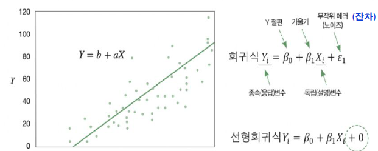
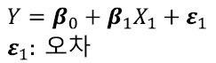
교재 p.35
잔차의 제곱합(SSE : Sum of Squared Errors) 이 0이 되는 직선 산출하는 단순회귀분석 회귀계수 추정기법.
교재 p.44
종속변수의 분산 중에서 독립변수로 설명되는 비율.
| 구분 | 내용 |
|---|---|
| 수식 | |
| 해석 | 결정계수는 0에서 1의 범위. 1에 가까울수록 회귀 모델의 설명력 높음. |
| +a | 독립변수가 많아지면 R² 커지는 경향. 다중회귀분석에서는 조정된 결정계수 사용. |
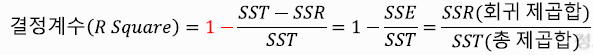
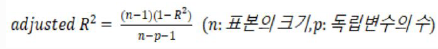
교재 p.48
2개 이상의 연속형 독립변수가 하나의 연속형 종속변수에 미치는 영향을 추정하는 회귀분석
| 구분 | 내용 |
|---|---|
| 가정사항 | 선등정독+다. 선형성(선형관계), 등분산성(분산 일정), 정규성(정규분포), 독립성(오차 독립), 다중공선성 |
| 다중회귀분석 종속변수 설명력 평가 척도 | 멜로우즈 Cp, 조정된 결정계수, 아카이케 정보기준(AIC), 베이즈 정보기준(BIC) |
| 다중회귀분석 변수선택 기준 | 전진선택법, 후진제거법, 단계적 방법 |
| 다중회귀분석 절차 | 회결회독+다. 회귀식 도출 → 결정계수 R², 조정된 결정계수 R²adj → 회귀식 유의성검증(F) → 독립변수 계수 유의성검증(t) → 다중공선성 진단 |
| 유의성 검정절차 | 회귀모델설정 → 선형성 확인 → 회귀계수β 추정 → 회귀계수 유의성검정 → 회귀식 적합성 확인 → 회귀식 영향력진단 → 최종모델선정 |
| 회귀계수β 추정 | 최소제곱법(OLS), 최대가능도법(MLE), 적률추정법 |
| 회귀계수 유의성 검정 | t-검정 |
| 회귀식 적합성 검정 | 모델 적합성(F검정) 모델 설명력(R²) 데이터의 모델적합성(등정독) |
| 회귀식 영향력 진단 | 레버리지, 표준화잔차, 스튜던트잔차, 쿡의거리, 마할라노비스거리, DFFITS, DFBETAS |
| 다중공선성 검정 | 독립변수 간 상관계수, 결정계수 R², 허용오차(1-R² < 0.1), 분산팽창요인(VIF = 1/허용오차 > 10) |
| 다중공선성 해결 | (변수제거) 불필요 변수제거, 변수선택 (차원조작) 차원축소, 신규데이터 (정규화) Ridge, Lasso (진단기반) VIF기준 제거, 허용오차 |
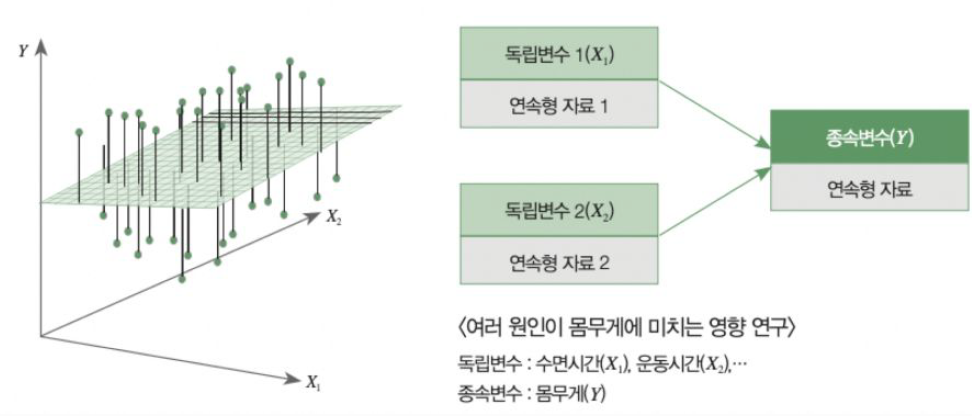
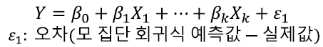
교재 p.56
회귀 계수에 제약조건을 추가하여 모델 과적합 방지.
| 구분 | 내용 |
|---|---|
| 특 | 노이즈 제거, 불필요 변수 영향 축소, 다중공선성 완화, 규제 강도 조절(α) |
| 유형 | 릿지회귀, 라쏘회귀, 엘라스틱넷 |
교재 p.57
종속변수가 연속형 정규분포를 따르고, 설명변수들과 선형관계를 가진 회귀모델
| 구분 | 내용 |
|---|---|
| 종속변수 유형 | 연속형 |
| 종속변수 분포 | 정규분포 |
| 모델산정방식 | 최소제곱법, 최고선형비편향예측 |
| 종류 | 선형, 다중선형, 분산분석, 다변량분산분석, 공분산분석, 혼합모델 |
교재 p.57
종속변수가 정규분포 외 다른 분포를 따르더라도 연결함수를 이용해 회귀분석이 가능한 일반화 모델.
| 구분 | 내용 |
|---|---|
| 종속변수 유형 | 범주형, 이산형, 비정규형 |
| 종속변수 분포 | 지수분포군 |
| 모델산정방식 | 최대가능도 |
| 종류 | 로지스틱 회귀분석, 포아송 회귀, 감마 회귀, 다항 로지스틱 회귀, 로그선형모델 |
| 3가지 성분 | 확률요소, 선형예측자, 연결함수 |
교재 p.58
| 구분 | 내용 |
|---|---|
| 성분 | (확률요소) 종속변수의 확률분포를 규정 (선형예측자) 독립변수 간의 선형결합 (연결함수) 종속변수와 선형예측자 간의 평균을 연결 |
교재 p.59
분석 모델의 불완전성을 파악하고 개선하여 최선의 모델을 선정하기 위한 절차.
| 구분 | 내용 |
|---|---|
| 목적 | 최종 모델의 선택 |
| 회귀모델 진단 | 선등정독+다. 선형성, 등분산성, 정규성, 독립성, 다중공선성 |
| 회귀모델 데이터 진단 | 레버리지, 표준화잔차, 스튜던트잔차, 쿡의거리, 마할라노비스거리, DFFITS, DFBETAS |
교재 p.63
★ 빈출최종 분석 모델의 신뢰성을 입증하여 모델의 타당성을 확보하는 절차.
| 구분 | 내용 |
|---|---|
| 특 | 최종모델 확보 후 진행, 활용가능성 판단, 일반화 가능성, 효율성, 정확성 |
| 회귀모델 평가 지표 | AE(평균오차), MAE(평균절대오차), MAPE(평균 절대백분율오차), MPE(평균백분율오차), MSE(평균제곱오차), RMSE(평균제곱근오차), R²(설명계수) R²adj(조정된 설명계수) |
교재 p.66
★★ 빈출독립변수의 선형결합을 이용하여 개별 관측치가 어느 집단(종속변수)에 속하는지 확률을 계산하는 분류기법.
| 구분 | 내용 |
|---|---|
| 가정사항 | 범주형 종속변수, 대표본, 선형성, 독립성 다중공선성 |
| 종류 | 이항(2범주), 다항(2이상 범주), 서수(2이상 범주+순서) |
| 절차 | 선형모델 표현 → 오즈(odds) 적용 → 로짓(logit) 적용 → 판별함수 적용 → 로지스틱 함수 적용 |
| 회귀계수 추정 | 최대가능도 추정법(MLE) |
| 회귀계수 유의성 검정 | 카이제곱 검정, 왈드 통계량 |
| 모델 적합성 검정 | 로그우도함수, -2로그우도함수, 카이제곱 검정 |
| 모델 설명력 검정 | 맥파든 의사결정계수 (R²pseudo) |
교재 p.71
어떤 사건이 일어날 확률과 일어나지 않을 확률의 비율.
| 구분 | 내용 |
|---|---|
| 특 | 항상 양수. 0에서 무한대 값으로 변환 |
| 수식 | Odds(Y=1) = p / 1-p |
교재 p.72
오즈(odds)에 로그를 취해 대층으로 변환하는 과정.
| 구분 | 내용 |
|---|---|
| 특 | 음의 무한대에서 양의 무한대 |
| 수식 | Logit(p) = Log(odds) = log( p / 1-p ) |
교재 p.73
로짓의 역함수로, 입력변수를 0에서 1 사이의 확률값으로 변환하는 함수.
| 구분 | 내용 |
|---|---|
| 특 | 0에서 1 사이 확률 |
| 수식 | Logistic(z) = 1 / (1 + exp^-z) |
교재 p.104
여러 현상이나 사건에 대한 측정치를 동시에 분석하는 통계 기법
| 구분 | 내용 |
|---|---|
| 분석기법 | (변수 간 관계) 다중회귀분석, 로지스틱 회귀분석, ANOVA, 상관관계 (차원축소) PCA, FA, CA (개체 분류) 군집분석, 판별분석, 다차원척도법(MDS) 등 |
교재 p.107
연속형 종속변수에 대해 3개 이상의 집단(독립변수)의 차이가 있는지 검정하는 분석기법.
| 구분 | 내용 |
|---|---|
| 특 | 집단간 평균비교, 분산기반, 모수검정 |
| 유형 | (단일변량) One-way ANOVA, Tow-way ANOVA, Multi-way ANOVA (반복측정) 반복측정 분산분석, 이원 반복측정 분산분석 (다변량) 다변량분산분석(MANOVA) |
| 절차 | 가설설정 → 변동요인산출(SSB, SSW, SST) → 검정통계량(F값) 산출 → 가설검정 → 유의성검정 → (유의성검정 기각시) 사후검정 |
| 가정사항 | 3개 이상 집단, 범주형 독립변수 1개 이상, 연속형 종속변수 2개 이상, 집단 간 독립성, 정규성, 등분산성, 분산/공분산 행렬 동일 |
| 정규성 검정 | 샤피로-윌크(오차항 정규분포 검정), 콜모고로프-스미르노프 검정(누적분포 히스토그램), Q-Q Plot(분위수 대조) |
| 등분산성 검정 | Bartlett 검정, Levene 검정 |
| 사후검정 | 유의성 검정 기각될 경우(평균차이 있음), 구체적 평균차이 확인 위함 → 튜키HSD(스튜던트 범위분포), 쉐페(모든 조합), 던칸(집단평균 정렬), 본페르니(오류율 조절), 피셔LSD(개별 t검정) |

교재 p.109
데이터의 분산을 최대한 보존하며 고차원 데이터를 저차원으로 축소하는 선형변환 알고리즘
| 구분 | 내용 |
|---|---|
| 특 | 선형변환, 차원의저주 해결 |
| 구성 | 분산, 공분산, 고유벡터, 고유값 |
| 절차 | 정공고주변. 정규화 → 공분산행렬 계산 → 고유값분해 → 주성분선택 → 데이터 변환 |
| 선택기준 | 고유값기준/누적기여율, 스크리그래프 |
교재 p.111
변수 간 상호 관련성을 요인(Factor)으로 추출하여 공통요인이 변수에 미치는 영향 및 특성을 파악하는 통계분석방법.
| 구분 | 내용 |
|---|---|
| 특 | 차원축소, 잠재구조 파악 |
| 주요 요인 | 공통요인, 특이요인, 요인적재량, 공통성, 요인점수 |
| 절차 | 상관행렬 생성 → 요인 추출 → 요인 수 결정 → 요인 회전 → 요인적재량 해석 → 요인 의미부여 → 요인점수 산출 |
교재 p.115
데이터 간의 거리를 바탕으로 관계 구조를 시각적으로 표현하는 통계 분석 기법.
| 구분 | 내용 |
|---|---|
| 특 | 거리기반 시각화, 차원축소, 비선형 구조 표현 |
| 유형 | 계량적 다차원척도법, 비계량적 다차원척도법 |
| 절차 | 자료수집 → 유사성/비유사성 측정 → 거리행렬 생성 → 공간상 표현 → 스트레스 값 측정 → 오차 최소화 |
| STRESS 수식 | STRESS = √ Σ(실제거리-추정거리)² / Σ실제거리² |
교재 p.117
불규칙성을 가지는 시계열 데이터에 패턴을 적용하거나, 예측하는 분석 방법론.
| 구분 | 내용 |
|---|---|
| 시계열 데이터 특성요인 | 추순계불. 추세요인, 순환요인, 계절요인, 불규칙요인 |
| 정상성 확인 | 시각적분석, ADF검정(정상성 없다), KPSS검정(정상성 있다), PP검정(단위근 존재여부), ACF분석(자기상관함수), 분산분석(시간분산변화), 스펙트럼분석(푸리에) |
| 정상성 부여 | 차분, 계절차분, 로그변환, Box-Cox 변환, 다항회귀 제거 |
| 예측방법 | (평활법) 이동평균법, 지수평활법 (분해법) 가법, 승법 (모델기반) 자기회귀모델-AR, 이동평균모델-MA, 자기회귀이동평균-ARMA, 자기회귀누적이동평균-ARIMA, 계절형-SARIMA |
| 평가지표 | MAE(평균절대오차), MAPE(평균절대 백분율오차), MSE(평균제곱오차), RMSE(평균제곱근오차), SMAPE(대칭적 평균절대 백분율 오차) |
| 주기동 | 시계열 예측기술의 발전 : (모형기반) 통계기반 시계열 → 경제모델 기반 시계열 ▶ (데이터기반) 머신러닝(랜덤포레스트, SVM, GBM) → 딥러닝(GRU, Transformer) |
교재 p.121
자료에 내재된 불규칙적인 변동이나 계절성을 제거하여 시계열 그림을 평탄한 형태로 만드는 방법.
| 구분 | 내용 |
|---|---|
| 기법 | 이동평균법(MA) - 일정기간 별 이동평균 계산 및 예측 지수평활법 - 모든 시계열 자료 평균, 최근자료에 가중치 부여해 예측 |
교재 p.122
시계열 데이터를 (추계불)추세, 계절성, 불규칙요인으로 나누어 분석하는 기법.
| 구분 | 내용 |
|---|---|
| 기법 | 가법 - 시계열 변동폭 일정한 경우 승법 - 시계열 변동폭이 점차 커지는 경우 |
교재 p.123
이전 자신의 관측값이 현재 자료에 미치는 영향에 기반한 시계열 데이터 예측 모델.
| 구분 | 내용 |
|---|---|
| 특 | 정상성 필요, 과거데이터 의존, 과거 차수 p 선택, 현시점 시계열 자료가 종속변수로 |
| 차수 p 선택방법 | PACF, 아카이케 정보기준(AIC), 베이즈 정보기준(BIC) |
| 한계점 및 해결방안 | (비정상 데이터) 차분 적용, ARIMA (과거 의존) SARIMA, Prophet |
교재 p.124
현재와 과거 자신의 오차와의 선형 결합으로 표현되는 시계열 모델.
| 구분 | 내용 |
|---|---|
| 특 | 과거 예측오차 기반, 정상성 필요, ACF 활용 |
| 시차 q 선택방법 | ACF, 아카이케 정보기준(AIC), 베이즈 정보기준(BIC) |
| 한계점 및 해결방안 | (과거데이터 미사용) AR 결합 (비정상 데이터) 차분 적용, ARMA, ARIMA |
교재 p.125
과거의 상태(AR)과 과거 오차값(MA)를 사용해 현재 상태를 예측하는 모델.
| 구분 | 내용 |
|---|---|
| 특 | 정상성 필요, PACF&ACF 활용, 단기 예측 강함 |
| 시차 q 선택방법 | PACF, ACF, 아카이케 정보기준(AIC), 베이즈 정보기준(BIC) |
| 한계점 및 해결방안 | (비정상 데이터) 차분 적용, ARIMA (계절성 분석불가) SARIMA |
교재 p.126
비정상적 시계열 데이터를 차분(Integrated)한 후 ARMA 기법을 적용하는 기법.
| 구분 | 내용 |
|---|---|
| 파라미터 선택방법 | p(자기회귀차수) - PACF d(차분차수) - ADF검정 q(이동평균차수) - ACF분석 |
| 한계점 및 해결방안 | (계절성 분석불가) SARIMA (파라미터 선택 어려움) Grid Search, Auto-ARIMA (비정상 외부요인 반영 어려움) Prophet, LSTM 등 딥러닝 고려 |
| 활용분야 | 금융/주가예측, 경제지표분석, 수요예측, 기후/환경분석, 제조/품질관리, 의료 분석 |
교재 p.128
ARIMA 모델에 계절적 패턴(계절성)을 반영한 시계열 예측 모델.
| 구분 | 내용 |
|---|---|
| 특 | 계절성 최적화, 비정상성 해결 필요, ARIMA 확장, 계절주기 반영 |
| 파라미터 | p(자기회귀차수) d(차분차수) q(이동평균차수) P(계절 자기회귀차수) D(계절 차분차수) Q(계절 이동평균차수) s(계절주기) |
교재 p.139
★ 빈출사전확률을 구한 후 확률에 영향을 미치는 변수를 고려하여 사후확률을 구하는 기법.
| 구분 | 내용 |
|---|---|
| 절차 | 사조후확전베. 사전확률계산 → 조건부확률계산 → 사후확률계산 → 확률의 곱셈법칙 → 전확률 계산 → 베이즈 정리 도출 |
| 수식 | (사전확률) P(A) (조건부확률) P(B|A) = P(A ∩ B) / P(A) (사후확률) P(A|B) = P(A ∩ B) / P(B) (확률의 곱셈법칙) P(A ∩ B) = P(B) P(A|B) = P(A) P(B|A) (전확률) P(B) = P(A₁) P(B|A₁) + P(A₂) P(B|A₂) + P(A₃) P(B|A₃) …. (베이즈정리) P(A₁|B) = P(A₁ ∩ B) / P(B) = P(A₁ ∩ B) / P(A₁) P(B|A₁) + P(A₂) P(B|A₂) + P(A₃) P(B|A₃) …. |
| +a | 나이브 베이즈 정리 → 독립변수가 서로 조건부 독립을 가정 |
교재 p.134
시간의 관점에서 A사건이 이루어진 후 B라는 사건이 발생할 확률.
| 구분 | 내용 |
|---|---|
| 수식 | P(B|A) = P(A ∩ B) / P(A) |
| 곱셈법칙 | P(A ∩ B) = P(B) P(A|B) = P(A) P(B|A) |
교재 p.137
결합확률의 합으로 주변확률을 구하는 방법.
| 구분 | 내용 |
|---|---|
| 수식 | P(B) = P(B ∩ A) = P(B ∩ A₁) + P(B ∩ A₂) + P(B ∩ A₃) …. = P(A₁) P(B|A₁) + P(A₂) P(B|A₂) + P(A₃) P(B|A₃) …. |
교재 p.143
모든 차원의 개별 독립변수가 서로 조건부 독립을 가정하여 베이즈 정리를 이용해 최대가능도를 추정하는 분류모델.
| 구분 | 내용 |
|---|---|
| 종류 | 가우시안 나이브베이즈, 다항 나이브베이즈, 베르누이 나이브베이즈 |
| 수식 | P(c₁|x₁, x₂) = P(x₁|c₁) P(x₂|c₁) P(c₁) / P(x₁) P(x₂) |
교재 p.153
★ 빈출비정형 데이터로부터 통계적 규칙이나 패턴을 탐색하고 의미있는 정보로 변환하는 분석과정
| 구분 | 내용 |
|---|---|
| 비정형 데이터 유형 | 텍스트, 이미지, 음성, 영상, 로그 파일 |
| 기법 | 텍스트, 웹, 오피니언, 소셜네트워크 분석, 감성분석, 리얼리티마이닝, 프로세스 마이닝 |
| 절차 | 목적설정 → 데이터준비 → 데이터가공 → 마이닝적용 → 검증 및 확인 |
교재 p.153
교재 p.156
과거 업무수행 기록을 분석하여 비효율성을 식별하고 최적화하는 활동.
| 구분 | 내용 |
|---|---|
| 기법 | 발견, 순응도, 확장 |
교재 p.157
★ 빈출비정형 텍스트 데이터를 자연어 처리방식을 통해 숨겨진 의미를 분석하는 기법.
| 구분 | 내용 |
|---|---|
| 절차 | 수전분시. 텍스트 수집 → 전처리 → 분석 → 시각화 |
| 기법 | (수집) 크롤링, 말뭉치, API, 로그수집 (전처리) 말뭉치형성, 토큰화, 불용어처리, 정규화, 표제어추출, 텍스트인코딩 (분석) 통계,마이닝,머신러닝,NLP (시각화) 워드클라우드, SNA |
교재 p.160
사용자가 입력한 문자나 기호들을 컴퓨터가 이용할 수 있는 값으로 변환하는 작업.
| 구분 | 내용 |
|---|---|
| 표현 | (희소표현) 고차원 유지 및 수치화 (밀집표현) 정의된 차원수로 저차원 표현 |
| 수치화기법 | (희소표현) Bag of Words, N-gram, 문서단어행렬 : DTM, TF-IDF, 원 핫 인코딩 (밀집표현) 워드 임베딩, Word2Vec, GloVe, 잠재의미분석, ELMo |
교재 p.168
★ 빈출사회연결망, SNS 데이터를 활용하여 사회과학적으로 분석하는 기법.
| 구분 | 내용 |
|---|---|
| 속성 | Node, Link, Degree |
| 절차 | 그래프생성→가공.분석→역할정의→마이닝 기법활용 |
| 속성 | 응가명범중. 응집력, 등가, 명성, 범위, 중계 |
| 분석방법 | 중심성분석(연결중심성, 매개중심성, 근접중심성, 고유벡터 중심성) , 이웃분석, 응집도분석, 밀도분석, 친화도분석 |
교재 p.172
| 구분 | 내용 |
|---|---|
| 모수통계 | 모집단 분포에 대한 가정이 필요한 통계 분석 기법. (데이터) 등간/비율데이터. (검정기법) t검정, z검정, ANOVA, 회귀분석 |
| 비모수통계 | 모집단 분포에 대한 가정 없이 수행하는 분석 기법. (데이터) 명목/서열 데이터 (검정기법) 윌콕슨, 부호, 카이제곱, 크루스칼왈리스, K-S검정 |
교재 p.189
표본이 가진 정보를 이용해 모집단에 대한 주장(가설)이 옳은지 판정하는 과정.
| 구분 | 내용 |
|---|---|
| 가설 | 귀무가설Ho, 대립가설H₁ |
| 오류 | (1종오류) 귀무 옳은데 귀무 기각 (2종오류) 귀무 그른데 귀무 채택 |
| 가설검정 절차 | 가유검유결. 가설설정 → 유의수준결정 → 검정통계량 계산 → 유의수준 따른 기각역설정 → 통계적 결론 통계적 가설 검정 유형 |
교재 p.192
표본에서 얻은 결과가 실제로 통계적 의미 있는 차이나 관계가 있는지 판단하는 방법.
| 구분 | 내용 |
|---|---|
| 특 | 가설기반 검정, 표본기반 판단, 우연가능성 계량화(p값), 유의수준 사용 |
| 종류 | (모수 분산차이 검정) 카이제곱검정, F검정 (모수 평균차이 검정) t-검정, 단일표본 t-검정, 대응표본 t-검정, 독립표본 t-검정, 분산분석 |
교재 p.193
★ 빈출
교재 p.193
관측 빈도와 기대빈도 간 차이 를 검정하여 독립성, 분포 적합성 확인하는 통계적 기법.
| 구분 | 내용 |
|---|---|
| 가설 | Ho : 분산차이 없다. H₁ : 분산차이 있/크/작다. |
| 수식 | 검정통계량 : χ² = (n–1) × s² / σ₀² → 관측도수와 기대도수 차이가 적을수록 카이제곱 통계량 작아져 적합도 높음. |
교재 p.197
두 모분산의 비를 이용해 표본 간 분산에 차이의 유의성을 검정하는 통계적 기법.
| 구분 | 내용 |
|---|---|
| 가설 | Ho : 분산차이 없다. H₁ : 분산차이 있/크/작다. |
| 수식 | 검정통계량 : F값 = s₁² / s₂² (집단내 분산비) = MSB / MSW = (각 집단 평균값 차이 분산) / (집단별 분산 가중평균) |
교재 p.201
★ 빈출모수 평균차이 검정 유형 모수 평균차이 검정 유형
교재 p.202
모집단의 분산을 모르고, 소표본(n<30)일 때 모평균에 대해 평균 차이를 검정하는 기법.
| 구분 | 내용 |
|---|---|
| 가정사항 | 독립변수 범주형 1개, 연속형 종속변수, 정규성, 등분산성 |
| 종류 | 단일표본, 대응표본, 독립표본 t검정 |
| 가설 | Ho : 평균차이 없다. H₁ : 평균차이 있/크/작다. |
| 수식 | t = (X̄ - μ) / (s / √n) |
교재 p.203
하나의 모집단의 평균값을 기준값과 비교하고자 할 때 사용하는 가설검정.
| 구분 | 내용 |
|---|---|
| 가설 | Ho : 평균은 xx이다. H₁ : 평균 xx아니다, 크다, 작다 |
| 수식 | t = (X̄ – μ₀) / (s / √n) |
교재 p.206
★ 빈출한 집단을 대상으로 두 가지 실험의 결과를 비교하고자 하는 가설검정.
| 구분 | 내용 |
|---|---|
| 가설 | Ho : 두 실험 평균차이 없다. H₁ : 평균차이 있/크/작다. |
| 수식 | t = D ̄ / (SD / √n) D ̄ : 차이 평균 SD : 차이 표준편차 |
교재 p.210
★ 빈출서로 독립인 두 모집단의 평균 차이에 대한 가설 검정.
| 구분 | 내용 |
|---|---|
| 가설 | Ho : 두 집단 평균차이 없다. H₁ : 평균차이 있/크/작다. |
| 수식 | (등분산) t = (X ̄₁ – X ̄₂) / √(s₁²/n₁ + s₂²/n₂) |
교재 p.212
★ 빈출연속형 종속변수에 대해 3개 이상의 집단(독립변수)의 차이가 있는지 검정하는 분석기법.
| 구분 | 내용 |
|---|---|
| 특 | 집단간 평균비교, 분산기반, 모수검정 |
| 유형 | (단일변량) One-way ANOVA, Tow-way ANOVA, Multi-way ANOVA (반복측정) 반복측정 분산분석, 이원 반복측정 분산분석 (다변량) 다변량분산분석(MANOVA) |
| 절차 | 가설설정 → 변동요인산출(SSB, SSW, SST) → 검정통계량(F값) 산출 → 가설검정 → 유의성검정 → (유의성검정 기각시) 사후검정 |
| 가정사항 | 3개 이상 집단, 범주형 독립변수 1개 이상, 연속형 종속변수 2개 이상, 집단 간 독립성, 정규성, 등분산성, 분산/공분산 행렬 동일 |
| 정규성 검정 | 샤피로-윌크(오차항 정규분포 검정), 콜모고로프-스미르노프 검정(누적분포 히스토그램), Q-Q Plot(분위수 대조) |
| 등분산성 검정 | Bartlett 검정, Levene 검정 |
| 사후검정 | 유의성 검정 기각될 경우(평균차이 있음), 구체적 평균차이 확인 위함 → 튜키HSD(스튜던트 범위분포), 쉐페(모든 조합), 던칸(집단평균 정렬), 본페르니(오류율 조절), 피셔LSD(개별 t검정) |
교재 p.218
분산분석에서 유의미한 평균차이 확인 시, 어떤 집단 간에 차이 존재하는지 비교분석하는 검정기법.
| 구분 | 내용 |
|---|---|
| 특 | 모든 집단 간 쌍 비교, 오류제어 방법 포함, 명확한 집단 해석 |
| 기법 | 튜키HSD (스튜던트 범위분포 기반) 쉐페 (모든 가능한 조합) 던칸(집단 평균을 크기순 정렬, 다중범위비교) 본페로니(유의수준을 비교횟수로 나누어) 피셔LSD(모든쌍 t검정) |
교재 p.219
데이터가 특정 이론적 분포와 일치하는지를 통계적으로 검정하는 기법.
| 구분 | 내용 |
|---|---|
| 분류 | ((정규분포 가정X)) 카이제곱 검정 ((정규분포 가정)) (정규성 검정) 샤피로 윌크 검정, 콜모고로프 스미르노프 검정, Q-Q Plot 검정 |
교재 p.220
관측 빈도와 기대빈도 간 차이 를 검정하여 독립성, 분포 적합성 확인하는 통계적 기법.
| 구분 | 내용 |
|---|---|
| 가설 | Ho : 분산차이 없다. H₁ : 분산차이 있/크/작다. |
| 수식 | 검정통계량 : χ² = (n–1) × s² / σ₀² → 관측도수와 기대도수 차이가 적을수록 카이제곱 통계량 작아져 적합도 높음. |
교재 p.221
교재 p.221
오차항이 정규분포를 따르는지 정규성을 검정하는 기법.
| 구분 | 내용 |
|---|---|
| 가설 | Ho : 정규분포 따른다. H₁ : 정규성을 따르지 않는다 |
| 수식 | W = ( Σ(ai × X(i)) )² / Σ( Xi – X ̄ )² |
| 해석 | W가 1가까울수록 정규분포 따름 |
교재 p.223
경험적 누적분포함수(EDF) 기반으로 표준편차와 히스토그램을 표준정규분포와 비교하는 정규성 검정기법.
| 구분 | 내용 |
|---|---|
| 최대거리 | D = max |F(X) – S(X)| |
교재 p.225
두 분포의 분위수를 표현하여 데이터가 정규분포를 따르는지 확인하기 위한 그래프.
| 구분 | 내용 |
|---|---|
| 특 | 정규성 시각적 확인, 두 분포 비교, 이상치 탐지가능 |
| 절차 | 데이터정렬 → 분위수계산 → 짝비교 → 점그리기 → 직선과 비교 |
| 해석 | 정규분포, Right Skewed, Left Skewed |
교재 p.234
★ 빈출데이터를 사람이 이해하기 쉽도록 표현하는 기술.
| 구분 | 내용 |
|---|---|
| 기능 | 설명적 기능, 탐색적 기능, 표현적 기능 |
| 목적 | 정보전달, 설득 |
| 절차 | 구시표. 정보구조화 → 정보시각화 → 정보시각표현 (정보구조화) 데이터수집, 탐색 (정보시각화) 시분관비공. 시간/분포/관계/비교/공간 시각화 (정보시각표현) 디자인원리, 인터랙선 디자인 |
| 데이터 유형별 검증항목 | (범주/비율) 범위, 분포, 순위, 측정 (시간) 추세방향, 추세패턴, 변동패턴, 중요도, 교차 (관계) 예외, 상관성, 연관성, 계층관계 |
| 도구 | Excel, CSV, Json, D3, Crossfilter, Tangle, R, Gephi, Tableau, Infogram, Datawrapper |
| 시스템 구축절차 | 시각화 기획 → 시각화 모델링 → 시각화 디자인 → 시각화 구축 → 시각화 배포 및 유지보수 |
교재 p.236
데이터 시각화 절차를 7단계로 구체화하여 프레임워크를 제시한 방법론.
| 구분 | 내용 |
|---|---|
| 단계 | 획분선마 표정상. (구조화) 획득 → 분해 → 선별 → 마인 → (시각화) 표현 → 정제 → (시각표현) 상호작용 |
교재 p.241
| 구분 | 내용 |
|---|---|
| 유형 | 시분관비공+인. 시간, 분포, 관계, 비교, 공간 시각화, 인포그래픽 (시간) 막대, 누적막대, 점, 선, 영역차트, 계단식 (분포) 파이, 도넛, 트리맵, 누적연속, 히스토그램 (관계) 산점도, 산점도행렬, 버블차트, 히스토그램 (비교) 플로팅바, 히트맵, 체르노프페이스, 스타차트, 평행좌표그래프, 다차원척도법 (공간) 등치지역도, 등치선도, 도트맵, 버블플로트맵, 카토그램 (인포그래픽) 지도형, 도표형, 타임라인형, 스토리텔링형, 만화형, 비교분석형 |
데이터 분석 거버넌스 — [구성]?
Process, Organization, Human Resource, Data, System
데이터 분석 거버넌스 — [수준진단 F/W]?
분석 준비도 (업무, 조직, 기법, 데이터, 문화, 인프라) , 분석 성숙도 (도입→활용→확산→최적화)
데이터 거버넌스 — [대상]?
마스터데이터, 메타데이터, 데이터사전, 빅브라더
데이터 거버넌스 — [구성]?
원조절, 원칙, 조직, 절차
빅데이터 전문인력 — [하드스킬]?
빅데이터 이론, 분석기술
빅데이터 전문인력 — [소프트 스킬]?
스토리텔링, 사고, 커뮤니케이션
빅데이터 플랫폼 — [주요기능]?
실시간 빅데이터처리, 분산병렬처리, 대규모 트랜잭션, 파일관리 효율화
빅데이터 플랫폼 — [3계층]?
SW계층, 플랫폼계층, 인프라스트럭쳐 계층
하둡 — [특]?
분산저장, 병렬처리, 오픈소스, 장애허용, 확장성
하둡 — [v3.0]?
HDFS+YARN+최적화, Erasure Coding, Ozone
맵리듀스(MapReduce) — [특]?
자동 분산 실행, 대용량 처리, HDFS기반 처리
맵리듀스(MapReduce) — [구성]?
(작업관리) JobTracker, TaskTracker, (입력처리) InputFormat (연산) Mapper, Shuffle&Shot, Reducer (출력) OutputFormat
하둡파일시스템(HDFS) — [구성]?
NameNode, Secondary NameNode, DataNode, CheckPoint
빅데이터 저장 포맷 — [종류]?
(Column기반) ORC, Parquet, DeltaLake, Feather (Row기반) Avro, JSON, CSV, SequenceFile (Hybrid) RCFile
ORC — [특]?
스트라이프 구조, 인덱스 내장, Hive 최적화, 고압축 지원
ORC — [구성]?
스트라이프, 로우데이터, 인덱스데이터, 스트라이프 푸터, 파일 푸터, 포스트스크립트
빅데이터 수집기술 — [종류]?
DB to DB, EAI, ETL, 크롤링, OpenAPI, 센싱, 척와, 플럼, 스트리밍, RSS Reader, 스쿱, 카프카
카프카 — [특]?
수평확장, 내결함성, 도구 연계성
카프카 — [구성]?
(데이터생성) Producer (메시지 저장/전달) Broker, Topic, Partition (데이터 소비) Consumer (관리) Zookeeper
람다 아키텍처 — [특]?
고가용성, 내결함성
람다 아키텍처 — [레이어]?
스바서. 스피드, 배치, 서빙 레이어
카파 아키텍처 — [특]?
배치 레이어를 스피드 레이어에 통합.
카파 아키텍처 — [레이어]?
스서. 스피드 레이어, 서빙 레이어
델타 아키텍처 — [특]?
CDC 처리, 데이터레이크 기반 계층적 처리, 배치+스트리밍 통합
델타 아키텍처 — [레이어]?
브실골. 브론즈, 실버, 골드 레이어
스파크 — [특]?
인메모리, RDD기반, Hadoop 한계 극복 및 호환성
스파크 — [구성]?
(Application) Spark SQL, Spark Streaming, Mllib, GraphX (실행엔진) Spark Core, Executor, Worker (인프라) ZooKeeper, YARN, HDFA Driver, RDD
판다스 — [구성]?
시리즈, 데이터프레임
판다스 — [주요기능]?
결측값처리, 데이터필터링, 시계열처리, 크기형태조정, 시각화 도우미
디자인 씽킹 — [구성]?
공정아프테. 공감→정의→아이디어→프로토타입→테스트
데이터 마이닝 방법론 — [종류]?
(통계적) 기술통계, 추론통계, 빈도분석, 분산분석, 회귀분석 등 (데이터마이닝) SEMMA, CRISP-DM, KDD (빅데이터) 계층적 프로세스 모델
KDD 방법론 — [절차]?
Selection → Preprocessing → Transformation → Data Mining → Evaluation
CRISP-DM 방법론 — [절차]?
Business Understanding → Data Uderstanding → Data Preparation → Modeling → Evaluation → Deployment
SEMMA 방법론 — [절차]?
Sampling → Explore → Modify → Modeling → Assessment
빅데이터 분석 방법론 — [절차]?
Planning → Preparing → Analyzing → Developing → Deploying
척도 — [구성]?
명서등비. (질적) 명목, 서열 (양적) 등간, 비율
비정형 데이터 정형 변환 — [기법]?
평집일정표. 소속범샘차. 평활화(이상값 변환), 집계(요약), 일반화(스케일변환), 정규화(구간 적용), 표준화(0중심 분포), 소수점 스케일링, 속성 생성, 범주화, 샘플링, 차원축소
데이터 비식별화 조치 — [대상]?
식별자, 준식별자, 민감정보
데이터 비식별화 조치 — [조치]?
(식별방지기법) 가총삭범마. 가명처리, 총계처리, 삭제, 범주화, 마스킹 (프라이버시 모델기반 추론방지) k-익명성, l-다양성, t-근접성
프라이버시 모델 기반 — [종류]?
k-익명성, l-다양성, t-근접성 연결공격 → "k-익명성" → 동질성, 배경지식 공격 → "l-다양성" → 쏠림, 유사성 공격 → "t-근접성"
k 익명성 — [특]?
연결공격 방지.
k 익명성 — [취약점]?
동배. 동질성 공격, 배경지식 공격 → l-다양성으로 해결
l 다양성 — [특]?
동질성, 배경지식 공격 방지
l 다양성 — [취약점]?
쏠유. 쏠림 공격, 유사성 공격 → t-근접성으로 해결
t 근접성 — [특]?
쏠림 공격, 유사성 공격 방지, 분포 간 거리를 KL-Divergence 나 Variational Distance 로 측정
동형 암호화 — [특]?
프라이버시 보존, 데이터 이동 최소화, 높은 계산비용
동형 암호화 — [유형]?
부준완. 부분 준 완전
재현 데이터 — [합성데이터 고려사항]?
재식별가능성, 사회적 부작용, 활용환경통제, 이중검증, 통계적특성 한계
재현 데이터 — [생성/활용절차]?
사생안심활. 사전준비 → 합성데이터 생성 → 안전성/유용성검증 → 심의위원회 평가 → 활용 및 안전한관리
PET 기법 — [난독]?
차분Privacy, 합성데이터, 영지식증명
PET 기법 — [암호화]?
동형암호, 신원기반, SMPC, TEE
데이터 품질인증 지표 — [법적근거]?
데이터산업법 20조.
데이터 품질인증 지표 — [내용]?
심사기준(정형/비정형 - 완유일정접유). 품질기준(정일유접적보+적보다유) 유형(Simple/Normal/Complex Type) 등급(Class A,B,C) 유효기간(1년)
데이터 웨어하우스 — [특징]?
주통시비. 주제중심, 통합성, 시간가변성, 비휘발성
데이터 웨어하우스 — [구성]?
(데이터처리) ETL, ODS (저장 및 구조화) Repository, DataMart (관리정보) 메타데이터 (UI) Access Tool, BI
스타 스키마 — [특]?
비정규화된 차원 테이블, 적은 조인, 빠른 성능, 많은 저장공간 요구
스노우플레이크 스키마 — [특]?
정규화된 차원 테이블, 다단계 조인 필요, 느린 성능, 저장공간 최적화, 정합성
ETL — [특]?
데이터 통합, 자동화, 대용량 처리, 품질향상, 분석 친화적 구조
ETL — [수행단계]?
Interface → Staging → Profiling → Cleansing → Integration → De-normalizing
ODS — [특]?
데이터 통합, 표준화, 주제중심 구조
ODS — [레이어]?
Interface, Data Staging, Data Profiling, Cleansing, Integration, Export Layer
OLAP — [특]?
다차원 분석, 빠른 응답, 복잡 질의 처리, 사용자 친화적
OLAP — [기능]?
Drill Down, Roll Up, Drill Access, Drill Through, Pivot, Slice, Dice
데이터 레이크 — [특]?
형식제한 없음, 스키마 온 리드, 확장성, 분석 최적화, 비용 효율성
데이터 레이크 — [절차]?
수조분제. 데이터 수집 → 데이터 조직화 → 데이터 분석 → 데이터 제공
데이터 패브릭 — [특]?
데이터 가시성, 데이터 관리 자동화, 실시간 데이터 접근
데이터 패브릭 — [아키텍처]?
DS Connector, 메타데이터 관리, 데이터통합, 오케스트레이션, 보안, AI/ML, 분산구조
데이터 메시 — [특]?
도메인 중심 소유, 자율과 책임, 데이터 제품화
데이터 메시 — [4원칙]?
도메인 소유권, 데이터 제품화, 셀프서비스 플랫폼, 연합형 계산 거버넌스
NoSQL — [특]?
Schemaless, Schema on Read, 수평확장, 고속처리, 대용량 적합, 가용성 중심
NoSQL — [일관성 모델]?
BASE. Basically Available, Soft-State, Eventually Consistency
CAP 이론 — [구성]?
Consistency, Availability, Partition Tolerance
CAP 이론 — [조합]?
CA (RDBMS) CP(MongoDB, Hbase, Redis, Neo4j) AP(Cassandra, Couchbase, DynamoDB, Riak)
Redis — [자료구조]?
String, List, Set, Hash, Sorted Set, Bitmap, HyperLog, Geo, Stream
HBASE — [특]?
정렬된 컬럼기반 저장, HDFS 연동, 유연한 스키마, 선형 확장성
HBASE — [자료구조]?
RowKey, Column Family, Column Qualifier, Timestamp, Cell
Cassandra — [특]?
P2P 분산구조, 선형 확장, 무중단 고가용성, Ring 구조 분산저장
Cassandra — [구성]?
클라이언트(Client Driver) 분산노드(Node, Cluster, Gossip Protocol, Snitch) 분산계층(Partitioner, Keyspace) 저장(Commit Log, Memtable, SSTable)
MongoDB — [특]?
오토샤딩, 자동 장애조치, 읽기 분산, BSON, Schema-less
MongoDB — [구성]?
클라이언트(Application, Driver) 요청처리(mongos) 저장(mongod, datastore, oplog) 확장(ReplicaSet, mongod, Shard)
분산 데이터베이스 조인 — [특]?
데이터 위치 고려, 통신비용, 병렬처리 가능성, 로컬 조인 우선
분산 데이터베이스 조인 — [종류]?
로 맵브리세. 로컬조인, 맵조인, 브로드캐스트조인(브로드캐스트, 리플리케이트), 리파티셔닝조인(셔플, 해시, 소트머지), 세미조인
데이터 전처리 — [특]?
데이터 변화 시 반복수행
데이터 전처리 — [절차(NCS)]?
실정통 축파불변. (정제) 데이터 실수화 → 정제 → 통합 (분석변수처리) 데이터 축소 → 파생변수생성 → 불균형 데이터처리 → 변수 변환
데이터 정제 — [데이터 오류 원인]?
결측값, 노이즈, 이상값, 아티팩트
결측값 — [유형]?
완전무작위(노상관), 무작위(결과영향X), 비무작위(결과영향)
결측값 — [처리기법]?
(삭제) 단일값 삭제, 목록 삭제 ((대치)) (단순대치) 완전분석법, 단순확률대치(핫덱,콜드덱,근접이웃), 평균대치(비조건부,조건부) (다중대치)
이상값 — [탐색기법]?
(통계적) Z검정, 카이제곱검정, (IQR) 사분위수 (회귀진단) 레버리지, 표준화잔차, 쿡의거리 (거리) K-NN, 마할라노비스 (밀도) LOF, DBSCAN, iForest, k-Means (처리기법) (삭제) 단일값 삭제, 목록 삭제 (극단치) 극단치 기준 제거, 절단, 조정 ((대치)) (단순대치) 완전분석법, 단순확률대치(핫덱,콜드덱,근접이웃), 평균대치(비조건부,조건부) (다중대치
분석 변수 처리 — [유형]?
변수선택, 차원축소, 파생변수생성, 불균형 데이터처리, 데이터 변환
변수 선택 — [기법]?
필래임. 필터 기법, 래퍼 기법, 임베디드 기법 (필터기법) 데이터 통계적 특성 이용해 관련성이 높은 변수를 선택 (알고리즘) 카이제곱검정, 정보이득, 피셔스코어, 상관계수, 분산기준 (래퍼기법) 변수 일부 사용해 모델링해 관련성을 측정해 변수를 선택. (탐색최적화) RFE(안중요 제거), GA(유전) (순차선택 전략) 전진선택법, 후진제거법, 단계별선택법 (임베디드기법) 필터 래퍼 기법 결
필터 기법 — [알고리즘]?
카이제곱검정, 정보이득, 피셔스코어, 상관계수, 분산기준
래퍼 기법 — [탐색최적화]?
RFE(안중요 제거), GA(유전)
래퍼 기법 — [순차선택 전략]?
전진선택법, 후진제거법, 단계별선택법
임베디드 기법 — [기법]?
라쏘회귀, 릿지회귀, 엘라스틱넷, SelectFromModel(의사결정나무트리)
차원 축소 — [특]?
연산 비용 감소. 시각화, 노이즈제거, 성능향상, 차원의저주 해결, 다중공선성 제거
차원 축소 — [차원축소 알고리즘]?
(선형) PCA, LDA, FA (비선형) t-SNE, UMAP, Isomap, LLE (신경망기반) AE, VAE, RBM (행렬분해) SVD, NMF, MDS
파생 변수 생성 — [기법]?
특징 추출, 열 결합, 타 테이블 참조, 데이터 피봇, 레코드 요약, 표준화/서열화, 수치 변환, 단위 변환
변수 변환 — [기법]?
(정규변환) 로그변환, 제곱근변환, 제곱변환, 박스콕스변환, 범주화, 스케일링 (범주형 데이터 변환) 명목척도 변환, 더미변수, 변수 구간화 (스케일링) 표준화, 정규화
불균형 데이터 — [영향]?
판별성능 저하, Accuracy Paradox
불균형 데이터 — [처리기법]?
(오버샘플링) 랜덤, 스모트, 보더라인스모트, 아다신 (언더샘플링) 랜덤, 토멕링크, CNN, OSS (알고리즘 기반) 소수 클래스 가중치 부여, 비용 민감 학습
데이터 탐색 과정 — [과정]?
묘탐확예. 묘사적(DDA) → 탐색적(EDA) → 확증적(CDA) → 예측적(PDA) (묘사적) 현재 모습 요약 - 평균, 표준편차, 빈도수, 백분위수, 첨도, 왜도 (탐색적) 수집된 데이터 탐색, 가설 도출 - 그래프분석, 정규성 검정 → (4주제) 저잔재현. 저항성, 잔차의해석, 재표현, 현시성 (확증적) 도출된 가설 검정 - 점추정, 구간추정, 가설검정 (예측적) 관계식을 만들고 최적
탐색적 데이터 분석 — [특]?
데이터 이해 중심, 시각화 기반, 이상치 탐지, 모델 가설 검정, 분석방향 결정
탐색적 데이터 분석 — [4주제]?
저잔재현. (저항성) 데이터 일부 파손 시, 영향 적게받는 성질 (잔차의해석) 예측값의 잔차 계산, 보통 데이터와 다른 경향 확인 (데이터의 재표현) 데이터 변환 통해 데이터 구조 파악 (데이터의 현시성) 그래프, 도표 등 시각화 변환
상관관계 분석 — [가정사항]?
이변량, 정규분포, 선형성 검증
상관관계 분석 — [해석]?
선형성, 방향, 크기(강도)
공분산 — [특]?
값의 범위 무한대, 강도 알수 없음.
상관계수 — [가정사항]?
이변량, 정규분포, 선형성검증
상관계수 — [종류]?
피어슨 상관계수, 스피어만 순위 상관계수, 켄달의 순위 상관계수
기초통계량 — [종류]?
(중심경향치) 평균, 중앙값, 최빈값 (산포도) 표준편차, 분산, 범위, 사분위수, 변동계수 (비대칭도) 왜도, 첨도
중심 경향치 — [종류]?
(중심경향치) 평균, 중앙값, 최빈값
중심 경향치 — [평균의 유형]?
산술, 절사, 가중, 기하, 조화
산포도 — [종류]?
(산포도) 표준편차, 분산, 범위, 사분위수, 변동계수
비대칭도 — [종류]?
(왜도) Skewness (첨도) Kurtosis
다변량 데이터 분석 — [분석기법]?
(관계 분석) 다중회귀, 로지스틱회귀, 다변량 분산분석, 상관관계분석, 교차분석 (차원 축소) PCA, FA, 정준상관분석 (개체 분류) MDS, 판별분석
차원 축소 — [특]?
연산 비용 감소. 시각화, 노이즈제거, 성능향상, 차원의저주 해결, 다중공선성 제거
차원 축소 — [차원축소 알고리즘]?
(선형) PCA, LDA, FA (비선형) t-SNE, UMAP, Isomap, LLE (신경망기반) AE, VAE, RBM (행렬분해) SVD, NMF, MDS
비정형 데이터 마이닝 — [비정형 데이터 유형]?
텍스트, 이미지, 음성, 영상, 로그 파일
비정형 데이터 마이닝 — [기법]?
텍스트, 웹, 오피니언, 소셜네트워크 분석, 감성분석, 리얼리티마이닝, 프로세스 마이닝
웹 마이닝 — [기법]?
컨구사. 웹컨텐츠, 웹구조, 웹사용 마이닝
텍스트 마이닝 — [절차]?
수전분시. 텍스트 수집 → 전처리 → 분석 → 시각화
텍스트 마이닝 — [기법]?
(수집) 크롤링, 말뭉치, API, 로그수집 (전처리) 말뭉치형성, 토큰화, 불용어처리, 정규화, 표제어추출, 텍스트인코딩 (분석) 통계,마이닝,머신러닝,NLP (시각화) 워드클라우드, SNA
기술통계 — [기법]?
평균, 중앙값, 범위, 분산, 그래프, 히스토그램
척도 — [구성]?
명서등비. (질적) 명목, 서열 (양적) 등간, 비율
단변량 자료 — [요약기법]?
(범주형) 도수분포표 (연속형) 중심경향치, 산포도, 비대칭도
단변량 자료 — [그래프]?
(범주형) 바차트, 파이차트 (연속형) 히스토그램, 커널밀도곡선, 박스그래프, 바이올린그래프
다변량 자료 — [요약기법]?
(범주-범주) 도수분포표, 분할표 (범주-연속) 그룹별 평균 (연속-범주) 도수분포표 (연속-연속) 산술평균, 중앙값, 조화평균
다변량 자료 — [분석기법]?
(범주-범주) 카이제곱검정, 백분율분석 (범주-연속) t-검정, 분산분석 (연속-범주) 로지스틱 회귀분석 (연속-연속) 상관관계 분석, 선형/다중회귀분석
표본조사 — [표본 추출법]?
(확률) 단계층집다. 단순확률, 계통, 층화확률, 집락, 다단계 (비확률) 편할지눈. 편의, 할당, 지원자, 눈덩이
이산,연속 확률분포 비교 — [이산]?
확률질량함수. 확률합1, 점 표현
이산,연속 확률분포 비교 — [연속]?
확률밀도함수, 면적1, 곡선그래프
이산확률분포 — [특]?
확률의 합=1, 이산형 변수, 확률을 점으로 표현
이산확률분포 — [유형]?
이베이초포음기. 이산균등(동일), 베르누이(결과 1 or 0), 이항(베르누이 n회 성공수), 초기하(비복원추출), 포아송(단위시공간), 음이항(베르누이 k성공까지), 기하(베르누이 첫성공)
이산균등 분포 — [예]?
주사위, 복권번호 추첨
베르누이 분포 — [확률]?
p, 1-p
베르누이 분포 — [예]?
동전, 불량/정상, 이메일 스팸여부
이항 분포 — [예]?
10번 동전 앞면수
이항 분포 — [관계]?
극단적 형태 포아송분포
초기하 분포 — [특]?
확률 매 시행마다 다름
초기하 분포 — [예]?
5개 뽑아 불량 2개 확률
기하 분포 — [예]?
동전 앞면 나올때까지
음이항 분포 — [예]?
동전 앞면 3회 나올때까지
포아송 분포 — [가정]?
독립성, 비례성, 비집락성
포아송 분포 — [예]?
1분간 콜센터 수신전화 수
연속확률분포 — [특]?
면적=1, 특정 값의 확률은 0, 구간 단위 확률계산
연속확률분포 — [유형]?
균정티감지카프. 연속균등(동일), 정규분포(종,대칭), t분포(소표본 평균), 감마(지수분포 일반화), 지수(시간간격), 카이제곱(분산검정), F분포(분산비)
연속균등 분포 — [예]?
무작위 실수 생성기
정규 분포 — [특]?
대칭, 종모양, 넓이 1, 표준편차 작아지면 밀집, 왜도0, 첨도3, 중심극한정리
표준정규 분포 — [특]?
정규분포의 표준화, Z값 기반, 좌우대칭, Z분포표 사용
감마 분포 — [특]?
포아송 가정 만족, 양수의 연속값 확률변수.
감마 분포 — [예]?
콜센터 전화 3회 수신까지 소요시간
지수 분포 — [예]?
첫 고장까지 걸린 시간
카이제곱 분포 — [특]?
비대칭 오른쪽 꼬리 분포. 자유도 커지면 정규분포 근사
카이제곱 분포 — [활용]?
범주형 변수 검정(적합도 검정, 독립성 검정, 동질성 검정), 분산검정, F분포 구성요소로 사용
t 분포 — [특징]?
정규분포 기반, 대칭, fat tail
t 분포 — [수식]?
t = (X̄ - μ) / (s / √n)
F 분포 — [특]?
표본분산 분포 추정.
F 분포 — [표본분산 분포]?
((n-1) × s²) / σ²
중심극한의 정리 — [특]?
통계학의 핵심 가정.
t 분포 — [특징]?
정규분포 기반, 대칭, fat tail
F 분포 — [특]?
표본분산 분포 추정.
추론 통계 — [기법]?
가설검정, 점추정, 구간추정, 회귀분석, 분산분석
점추정 — [구성]?
모수, 추정량, 추정치
점추정 — [점추정 4준거]?
불유일충. 불편성(가까워지는 성질), 유효성(분산 작음 정확), 일치성(모수 같아지는), 충분성(동일 표본 많은정보)
불편성(불편추정량) — [활용]?
비편향 표본통계량. 좋은 추정량 선택 위한 기준. 반복추출 시 정답에 가까워짐
유효성 — [예]?
1000번 추출 → 실제 모수에 근접 = 불편성 있음
일치성 — [효율성]?
추정량1 분산 / 추정량2 분산 결과, 1보다 크면 효율적, 1보다 작으면 덜효율적
구간추정 — [특]?
범위 기반 추정, 신뢰수준 제시, 표준오차 반영
구간추정 — [구성]?
신뢰계수, 신뢰수준, 신뢰구간, 유의수준, 임계값, 표준오차
z 분포 — [수식]?
Z = (X̄ - μ) / (σ / √n)
t 분포 — [특징]?
정규분포 기반, 대칭, fat tail
t 분포 — [수식]?
t = (X̄ - μ) / (s / √n)
가설검정 — [가설의 종류]?
귀무가설Ho, 대립가설H₁
가설검정 — [오류]?
(1종오류) 귀무 옳은데 귀무 기각 (2종오류) 귀무 그른데 귀무 채택
편향 분산 Trade-off — [편향]?
지나치게 단순한 모델로 인한 오류.
편향 분산 Trade-off — [분산]?
지나치게 복잡한 모델로 인한 오류
회귀 분석 — [가정사항]?
선등정독+다. 선형성(선형관계), 등분산성(분산 일정), 정규성(정규분포), 독립성(오차 독립), 다중공선성
회귀 분석 — [유형]?
단순회귀분석(1독립) 다중회귀분석(n독립) 일반회귀분석(등간/비율) 더미변수(명목/서열) 선형회귀분석(선형관계) 비선형회귀분석(비선형관계)
회귀분석의 기본 가정사항 — [가정사항]?
선등정독. 선형성(선형관계), 등분산성(분산 일정), 정규성(정규분포), 독립성(오차 독립)
독립, 종속변수 간 선형성 — [확인방법]?
산점도, 잔차도
독립, 종속변수 간 선형성 — [위배 시]?
변수변환(로그, 제곱근 변환 등)
오차의 등분산성 — [확인방법]?
잔차도, Leven 검정, Bartlett 검정
오차의 등분산성 — [위배 시]?
가중 회귀, 변수 변환, 이분산 견고 표준오차(HCSE)
오차의 정규성 — [확인방법]?
히스토그램, Q-Q Plot, Shapiro-Wilk검정, Kolmogorov-Smirnov검정, Jarque-Bera검정
오차의 정규성 — [위배 시]?
변수변환(로그, 제곱근 변환 등)
오차의 독립성 — [검증방법]?
산점도, 자기상관함수(ACF), Durbin-Watson검정
오차의 독립성 — [위배 시]?
시계열 변환(ARIMA), 표준오차(Newey-West)
회귀분석의 유형 — [유형]?
단순회귀분석(1독립) 다중회귀분석(n독립) 일반회귀분석(등간/비율) 더미변수(명목/서열) 선형회귀분석(선형관계) 비선형회귀분석(비선형관계)
단순회귀분석 — [가정사항]?
선등정독+다. 선형성(선형관계), 등분산성(분산 일정), 정규성(정규분포), 독립성(오차 독립), 다중공선성
단순회귀분석 — [유형]?
단순회귀분석(1독립) 다중회귀분석(n독립) 일반회귀분석(등간/비율) 더미변수(명목/서열) 선형회귀분석(선형관계) 비선형회귀분석(비선형관계)
결정계수 R² — [해석]?
결정계수는 0에서 1의 범위. 1에 가까울수록 회귀 모델의 설명력 높음.
다중회귀분석 — [가정사항]?
선등정독+다. 선형성(선형관계), 등분산성(분산 일정), 정규성(정규분포), 독립성(오차 독립), 다중공선성
다중회귀분석 — [다중회귀분석 종속변수 설명력 평가 척도]?
멜로우즈 Cp, 조정된 결정계수, 아카이케 정보기준(AIC), 베이즈 정보기준(BIC)
규제가 있는 회귀분석 — [특]?
노이즈 제거, 불필요 변수 영향 축소, 다중공선성 완화, 규제 강도 조절(α)
규제가 있는 회귀분석 — [유형]?
릿지회귀, 라쏘회귀, 엘라스틱넷
일반 선형모델 — [종속변수 분포]?
정규분포
일반화 선형모델 — [종속변수 유형]?
범주형, 이산형, 비정규형
일반화 선형모델 — [종속변수 분포]?
지수분포군
일반화 선형모델 3가지 성분 — [성분]?
(확률요소) 종속변수의 확률분포를 규정 (선형예측자) 독립변수 간의 선형결합 (연결함수) 종속변수와 선형예측자 간의 평균을 연결
회귀모델의 진단 — [목적]?
최종 모델의 선택
회귀모델의 진단 — [회귀모델 진단]?
선등정독+다. 선형성, 등분산성, 정규성, 독립성, 다중공선성
회귀모델의 평가 — [특]?
최종모델 확보 후 진행, 활용가능성 판단, 일반화 가능성, 효율성, 정확성
회귀모델의 평가 — [회귀모델 평가 지표]?
AE(평균오차), MAE(평균절대오차), MAPE(평균 절대백분율오차), MPE(평균백분율오차), MSE(평균제곱오차), RMSE(평균제곱근오차), R²(설명계수) R²adj(조정된 설명계수)
로지스틱 회귀분석 — [가정사항]?
범주형 종속변수, 대표본, 선형성, 독립성 다중공선성
로지스틱 회귀분석 — [종류]?
이항(2범주), 다항(2이상 범주), 서수(2이상 범주+순서)
오즈 (Odds) — [특]?
항상 양수. 0에서 무한대 값으로 변환
오즈 (Odds) — [수식]?
Odds(Y=1) = p / 1-p
로짓 (Logit) 변환 — [특]?
음의 무한대에서 양의 무한대
로짓 (Logit) 변환 — [수식]?
Logit(p) = Log(odds) = log( p / 1-p )
로지스틱 함수 — [특]?
0에서 1 사이 확률
로지스틱 함수 — [수식]?
Logistic(z) = 1 / (1 + exp^-z)
다변량 분석 — [분석기법]?
(변수 간 관계) 다중회귀분석, 로지스틱 회귀분석, ANOVA, 상관관계 (차원축소) PCA, FA, CA (개체 분류) 군집분석, 판별분석, 다차원척도법(MDS) 등
다변량 분산분석 (ANOVA) — [특]?
집단간 평균비교, 분산기반, 모수검정
다변량 분산분석 (ANOVA) — [유형]?
(단일변량) One-way ANOVA, Tow-way ANOVA, Multi-way ANOVA (반복측정) 반복측정 분산분석, 이원 반복측정 분산분석 (다변량) 다변량분산분석(MANOVA)
주성분 분석 (PCA) — [특]?
선형변환, 차원의저주 해결
주성분 분석 (PCA) — [구성]?
분산, 공분산, 고유벡터, 고유값
요인 분석 (FA) — [특]?
차원축소, 잠재구조 파악
요인 분석 (FA) — [주요 요인]?
공통요인, 특이요인, 요인적재량, 공통성, 요인점수
다차원 척도법 (MDS) — [특]?
거리기반 시각화, 차원축소, 비선형 구조 표현
다차원 척도법 (MDS) — [유형]?
계량적 다차원척도법, 비계량적 다차원척도법
시계열 분석 — [시계열 데이터 특성요인]?
추순계불. 추세요인, 순환요인, 계절요인, 불규칙요인
시계열 분석 — [정상성 확인]?
시각적분석, ADF검정(정상성 없다), KPSS검정(정상성 있다), PP검정(단위근 존재여부), ACF분석(자기상관함수), 분산분석(시간분산변화), 스펙트럼분석(푸리에)
평활법 (Smoothing Method) — [기법]?
이동평균법(MA) - 일정기간 별 이동평균 계산 및 예측 지수평활법 - 모든 시계열 자료 평균, 최근자료에 가중치 부여해 예측
분해법 (Decomposition Method) — [기법]?
가법 - 시계열 변동폭 일정한 경우 승법 - 시계열 변동폭이 점차 커지는 경우
자기회귀 모델(AR) — [특]?
정상성 필요, 과거데이터 의존, 과거 차수 p 선택, 현시점 시계열 자료가 종속변수로
자기회귀 모델(AR) — [차수 p 선택방법]?
PACF, 아카이케 정보기준(AIC), 베이즈 정보기준(BIC)
이동평균 모델(MA) — [특]?
과거 예측오차 기반, 정상성 필요, ACF 활용
이동평균 모델(MA) — [시차 q 선택방법]?
ACF, 아카이케 정보기준(AIC), 베이즈 정보기준(BIC)
자기회귀 이동평균 모델(ARMA) — [특]?
정상성 필요, PACF&ACF 활용, 단기 예측 강함
자기회귀 이동평균 모델(ARMA) — [시차 q 선택방법]?
PACF, ACF, 아카이케 정보기준(AIC), 베이즈 정보기준(BIC)
자기회귀누적 이동평균 모델(ARIMA) — [파라미터 선택방법]?
p(자기회귀차수) - PACF d(차분차수) - ADF검정 q(이동평균차수) - ACF분석
자기회귀누적 이동평균 모델(ARIMA) — [한계점 및 해결방안]?
(계절성 분석불가) SARIMA (파라미터 선택 어려움) Grid Search, Auto-ARIMA (비정상 외부요인 반영 어려움) Prophet, LSTM 등 딥러닝 고려
계절형 자기회귀누적 이동평균(SARIMA) — [특]?
계절성 최적화, 비정상성 해결 필요, ARIMA 확장, 계절주기 반영
계절형 자기회귀누적 이동평균(SARIMA) — [파라미터]?
p(자기회귀차수) d(차분차수) q(이동평균차수) P(계절 자기회귀차수) D(계절 차분차수) Q(계절 이동평균차수) s(계절주기)
베이즈 정리 — [절차]?
사조후확전베. 사전확률계산 → 조건부확률계산 → 사후확률계산 → 확률의 곱셈법칙 → 전확률 계산 → 베이즈 정리 도출
베이즈 정리 — [수식]?
(사전확률) P(A) (조건부확률) P(B|A) = P(A ∩ B) / P(A) (사후확률) P(A|B) = P(A ∩ B) / P(B) (확률의 곱셈법칙) P(A ∩ B) = P(B) P(A|B) = P(A) P(B|A) (전확률) P(B) = P(A₁) P(B|A₁) + P(A₂) P(B|A₂) + P(A₃) P(B|A₃) …. (베이즈정리) P(A₁|B) = P(A₁ ∩ B) / P(B
조건부 확률 — [수식]?
P(B|A) = P(A ∩ B) / P(A)
조건부 확률 — [곱셈법칙]?
P(A ∩ B) = P(B) P(A|B) = P(A) P(B|A)
전확률의 법칙 — [수식]?
P(B) = P(B ∩ A) = P(B ∩ A₁) + P(B ∩ A₂) + P(B ∩ A₃) …. = P(A₁) P(B|A₁) + P(A₂) P(B|A₂) + P(A₃) P(B|A₃) ….
나이브 베이즈 — [종류]?
가우시안 나이브베이즈, 다항 나이브베이즈, 베르누이 나이브베이즈
나이브 베이즈 — [수식]?
P(c₁|x₁, x₂) = P(x₁|c₁) P(x₂|c₁) P(c₁) / P(x₁) P(x₂)
비정형 데이터 마이닝 — [비정형 데이터 유형]?
텍스트, 이미지, 음성, 영상, 로그 파일
비정형 데이터 마이닝 — [기법]?
텍스트, 웹, 오피니언, 소셜네트워크 분석, 감성분석, 리얼리티마이닝, 프로세스 마이닝
프로세스 마이닝 — [기법]?
발견, 순응도, 확장
텍스트 마이닝 — [절차]?
수전분시. 텍스트 수집 → 전처리 → 분석 → 시각화
텍스트 마이닝 — [기법]?
(수집) 크롤링, 말뭉치, API, 로그수집 (전처리) 말뭉치형성, 토큰화, 불용어처리, 정규화, 표제어추출, 텍스트인코딩 (분석) 통계,마이닝,머신러닝,NLP (시각화) 워드클라우드, SNA
텍스트 인코딩 — [표현]?
(희소표현) 고차원 유지 및 수치화 (밀집표현) 정의된 차원수로 저차원 표현
텍스트 인코딩 — [수치화기법]?
(희소표현) Bag of Words, N-gram, 문서단어행렬 : DTM, TF-IDF, 원 핫 인코딩 (밀집표현) 워드 임베딩, Word2Vec, GloVe, 잠재의미분석, ELMo
사회연결망분석 — [속성]?
Node, Link, Degree
사회연결망분석 — [절차]?
그래프생성→가공.분석→역할정의→마이닝 기법활용
모수통계, 비모수통계 비교 — [모수통계]?
모집단 분포에 대한 가정이 필요한 통계 분석 기법. (데이터) 등간/비율데이터. (검정기법) t검정, z검정, ANOVA, 회귀분석
모수통계, 비모수통계 비교 — [비모수통계]?
모집단 분포에 대한 가정 없이 수행하는 분석 기법. (데이터) 명목/서열 데이터 (검정기법) 윌콕슨, 부호, 카이제곱, 크루스칼왈리스, K-S검정
통계적 가설 검정 — [가설]?
귀무가설Ho, 대립가설H₁
통계적 가설 검정 — [오류]?
(1종오류) 귀무 옳은데 귀무 기각 (2종오류) 귀무 그른데 귀무 채택
모수 유의성 검정 — [특]?
가설기반 검정, 표본기반 판단, 우연가능성 계량화(p값), 유의수준 사용
모수 유의성 검정 — [종류]?
(모수 분산차이 검정) 카이제곱검정, F검정 (모수 평균차이 검정) t-검정, 단일표본 t-검정, 대응표본 t-검정, 독립표본 t-검정, 분산분석
카이제곱 검정 — [가설]?
Ho : 분산차이 없다. H₁ : 분산차이 있/크/작다.
카이제곱 검정 — [수식]?
검정통계량 : χ² = (n–1) × s² / σ₀² → 관측도수와 기대도수 차이가 적을수록 카이제곱 통계량 작아져 적합도 높음.
F검정 — [가설]?
Ho : 분산차이 없다. H₁ : 분산차이 있/크/작다.
F검정 — [수식]?
검정통계량 : F값 = s₁² / s₂² (집단내 분산비) = MSB / MSW = (각 집단 평균값 차이 분산) / (집단별 분산 가중평균)
t검정 — [가정사항]?
독립변수 범주형 1개, 연속형 종속변수, 정규성, 등분산성
t검정 — [종류]?
단일표본, 대응표본, 독립표본 t검정
단일표본 t검정 — [가설]?
Ho : 평균은 xx이다. H₁ : 평균 xx아니다, 크다, 작다
단일표본 t검정 — [수식]?
t = (X̄ – μ₀) / (s / √n)
대응표본 t검정 — [가설]?
Ho : 두 실험 평균차이 없다. H₁ : 평균차이 있/크/작다.
대응표본 t검정 — [수식]?
t = D ̄ / (SD / √n) D ̄ : 차이 평균 SD : 차이 표준편차
독립표본 t검정 — [가설]?
Ho : 두 집단 평균차이 없다. H₁ : 평균차이 있/크/작다.
독립표본 t검정 — [수식]?
(등분산) t = (X ̄₁ – X ̄₂) / √(s₁²/n₁ + s₂²/n₂)
분산분석(ANOVA) — [특]?
집단간 평균비교, 분산기반, 모수검정
분산분석(ANOVA) — [유형]?
(단일변량) One-way ANOVA, Tow-way ANOVA, Multi-way ANOVA (반복측정) 반복측정 분산분석, 이원 반복측정 분산분석 (다변량) 다변량분산분석(MANOVA)
분산분석의 사후검정 — [특]?
모든 집단 간 쌍 비교, 오류제어 방법 포함, 명확한 집단 해석
분산분석의 사후검정 — [기법]?
튜키HSD (스튜던트 범위분포 기반) 쉐페 (모든 가능한 조합) 던칸(집단 평균을 크기순 정렬, 다중범위비교) 본페로니(유의수준을 비교횟수로 나누어) 피셔LSD(모든쌍 t검정)
적합도 검정 — [분류]?
((정규분포 가정X)) 카이제곱 검정 ((정규분포 가정)) (정규성 검정) 샤피로 윌크 검정, 콜모고로프 스미르노프 검정, Q-Q Plot 검정
카이제곱 검정 — [가설]?
Ho : 분산차이 없다. H₁ : 분산차이 있/크/작다.
카이제곱 검정 — [수식]?
검정통계량 : χ² = (n–1) × s² / σ₀² → 관측도수와 기대도수 차이가 적을수록 카이제곱 통계량 작아져 적합도 높음.
샤피로 윌크 검정 — [가설]?
Ho : 정규분포 따른다. H₁ : 정규성을 따르지 않는다
샤피로 윌크 검정 — [수식]?
W = ( Σ(ai × X(i)) )² / Σ( Xi – X ̄ )²
콜모고로프 스미르노프 검정 — [최대거리]?
D = max |F(X) – S(X)|
Q-Q Plot — [특]?
정규성 시각적 확인, 두 분포 비교, 이상치 탐지가능
Q-Q Plot — [절차]?
데이터정렬 → 분위수계산 → 짝비교 → 점그리기 → 직선과 비교
데이터 시각화 — [기능]?
설명적 기능, 탐색적 기능, 표현적 기능
데이터 시각화 — [목적]?
정보전달, 설득
밴프라이 데이터 시각화 방법론 — [단계]?
획분선마 표정상. (구조화) 획득 → 분해 → 선별 → 마인 → (시각화) 표현 → 정제 → (시각표현) 상호작용
데이터 시각화 유형 — [유형]?
시분관비공+인. 시간, 분포, 관계, 비교, 공간 시각화, 인포그래픽 (시간) 막대, 누적막대, 점, 선, 영역차트, 계단식 (분포) 파이, 도넛, 트리맵, 누적연속, 히스토그램 (관계) 산점도, 산점도행렬, 버블차트, 히스토그램 (비교) 플로팅바, 히트맵, 체르노프페이스, 스타차트, 평행좌표그래프, 다차원척도법 (공간) 등치지역도, 등치선도, 도트맵, 버블플로트맵, 카토그램 (인포그래픽)